Vos rushs, enfin lisibles. Your rushes, finally readable.
Une application autonome qui produit, sur votre machine, une analyse complète de chaque vidéo : les plans, les images clés et les sujets, les sons, la parole, le texte à l'écran, le lieu, l'heure, le soleil et la météo du tournage. Trois façons de s'en servir : seule, pour chercher et étudier ; avec DaVinci Resolve, dans les deux sens — une timeline créée avec sous-titres et marqueurs, ou une timeline de Resolve importée pour être analysée ; avec un assistant IA : grâce au protocole MCP, l'assistant se branche à la fois sur DaVinci Resolve et sur l'application, et peut ainsi monter vos vidéos en sachant ce qu'elles contiennent. A standalone application that produces, on your own machine, a complete analysis of each video: shots, keyframes and subjects, sounds, speech, on-screen text, and the place, time, sun and weather of the shoot. Three ways to use it: on its own, to search and study; with DaVinci Resolve, in both directions — a timeline created with subtitles and markers, or a Resolve timeline imported to be analysed; with an AI assistant: through the MCP protocol, the assistant connects to both DaVinci Resolve and the application, and can then edit your videos knowing what they contain.
En huit minutesIn nine minutes
La vidéo de présentation The walkthrough video
- Présentation
- L'analyse
- L'image
- Le son
- Le contexte
- La recherche
- Avec DaVinci Resolve
- Avec un assistant IA
- Vos données
- L'objectif
- Introduction
- The analysis
- The picture
- The sound
- The context
- Search
- With DaVinci Resolve
- With an AI assistant
- Your data
- The goal
Commentaire en français. La vidéo s'ouvre aussi sur YouTube ; elle existe en anglais. Narrated in English. The video also opens on YouTube; there is a French version.
SommaireContents
Douze partiesTwelve parts
Partie 1Part 1
Le problème, ce n'est pas de filmer Shooting was never the problem
C'est de retrouver. Un dossier de rushs, ce sont des noms de fichiers et des vignettes : rien qui dise ce qu'on y voit, ce qu'on y dit, ni quand la lumière était bonne. Video Frame Expedition produit, sur votre machine, une analyse complète de chaque vidéo — à partir des métadonnées du fichier et d'une vingtaine d'analyses : l'image, le son, la parole, le lieu, l'heure, la météo — puis la rend utilisable là où se fait le montage. Il y a trois façons de s'en servir. Finding things again was. A folder of rushes is a list of file names and thumbnails: nothing that tells you what is in shot, what is said, or when the light was good. Video Frame Expedition produces, on your machine, a complete analysis of each video — from the file's metadata and some twenty analyses: picture, sound, speech, place, time, weather — then makes it usable where the editing happens. There are three ways to use it.
SeuleOn its own
Une interface pour étudier chaque analyse en détail : la bibliothèque et ses filtres (lumière, météo, lieu, sujets), la page d'une vidéo et ses sept onglets, la recherche par les mots et par le sens dans tout ce qui se voit, se dit, s'entend ou se lit, et les questions posées en français à toute la bibliothèque, avec les sources citées. An interface to study each analysis in detail: the library and its filters (light, weather, place, subjects), a video's page and its seven tabs, search by words and by meaning across everything seen, said, heard or read, and questions asked of the whole library, with sources cited.
Avec DaVinci Resolve, dans les deux sens With DaVinci Resolve, both ways
Dans un sens, les vidéos cochées deviennent une timeline — dans le projet ouvert, ou en fichier — avec la transcription et la description des plans en pistes de sous-titres, et les moments forts et chapitres en marqueurs. Dans l'autre, une timeline d'un projet Resolve entre dans la bibliothèque comme un chutier, ses vidéos sont analysées, et la recherche travaille à l'intérieur. Le projet est lu, jamais modifié. One way, the videos you tick become a timeline — in the open project, or as a file — with the transcript and shot descriptions as subtitle tracks, and the highlights and chapters as markers. The other way, a timeline of a Resolve project enters the library as a bin, its videos get analysed, and search works inside it. The project is read, never changed.
Avec un assistant IA, par MCP With an AI assistant, over MCP
Un serveur MCP expose toutes les analyses à Claude Code, Claude Desktop, Cursor, VS Code ou Codex. L'assistant lit la timeline ouverte dans DaVinci Resolve, la relie aux analyses et construit un montage dans une timeline neuve — en sachant, pour une fois, ce qu'il y a dans les plans. L'application lui fournit des analyses toutes prêtes et un modèle local à qui confier les tâches simples. C'est le principe d'escalade : le simple au modèle local, sur votre machine ; le complexe au modèle frontière, plus coûteux, qui économise ainsi ses tokens. La coupe finale reste la vôtre. An MCP server exposes every analysis to Claude Code, Claude Desktop, Cursor, VS Code or Codex. The assistant reads the timeline open in DaVinci Resolve, ties it to the analyses and builds an edit in a new timeline — knowing, for once, what is in the shots. The application gives it ready-made analyses and a local model to hand simple tasks to. That is the escalation principle: simple work goes to the local model, on your machine; complex work to the frontier model, which is costlier and so saves its tokens. The final cut stays yours.
Les combinaisons, en schémasThe combinations, as diagrams
Trois acteurs — l'application, un assistant IA, DaVinci Resolve — et six façons de les brancher. En couleur, ce qui travaille ; en pointillé, ce qui reste à l'écart.Three players — the application, an AI assistant, DaVinci Resolve — and six ways to connect them. In colour, what is at work; dotted, what stays out.
Vous travaillez dans le navigateur, sur une analyse faite entièrement sur votre machine.You work in the browser, on an analysis done entirely on your machine.
Les vidéos cochées deviennent une timeline ; une timeline de Resolve devient un chutier de la bibliothèque. À l'import, le projet est lu, jamais modifié.Ticked videos become a timeline; a Resolve timeline becomes a bin in the library. When importing, the project is read, never changed.
L'assistant lit des analyses toutes prêtes et confie les tâches simples au modèle local : c'est le principe d'escalade.The assistant reads ready-made analyses and hands simple tasks to the local model: that is the escalation principle.
Avec l'option « Outils Resolve pour l'assistant » (page Connexions), l'assistant choisit les plans et les cadrages sans écrire de code : l'application lit la timeline et construit le montage elle-même, toujours dans une nouvelle timeline.With the “Resolve tools for the assistant” option (Connections page), the assistant picks the shots and the framing without writing any code: the application reads the timeline and builds the edit itself, always in a new timeline.
Sans cette option : l'assistant prend les analyses à l'application, puis écrit lui-même les scripts qu'il envoie au serveur MCP de Resolve. Il travaille dans une copie de votre timeline.Without that option: the assistant takes the analyses from the application, then writes the scripts itself and sends them to Resolve's MCP server. It works in a copy of your timeline.
Resolve tourne sur un Mac : les outils de l'application le pilotent par le réseau, et l'assistant reste sur ce PC.Resolve runs on a Mac: the application's tools drive it over the network, and the assistant stays on this PC.
Le modèle de vision reste sur le GPU. L'application se sert du modèle que vous avez chargé dans LM Studio : pendant les analyses, elle n'en charge, n'en décharge et n'en remplace jamais aucun. Seule la page « Banc d'essai » en charge, à votre demande, pour les comparer. Le décodage vidéo et la transcription n'empruntent la carte que s'il reste assez de mémoire libre, avec une marge ; sinon ils restent sur le processeur. The vision model stays on the GPU. The application uses the model you loaded in LM Studio: during the analyses it never loads, unloads or swaps one. Only the "Model bench" page loads models, at your request, to compare them. Video decoding and transcription only borrow the card when enough memory is free, with a margin; otherwise they stay on the CPU.
Partie 2Part 2
Installer, et vérifier que tout répond Install, and check that everything answers
Ce qu'il vous fautWhat you need
L'applicationThe application
- Windows 11 Un Mac à puce Apple Silicon (M1 ou plus récente), macOS 15 ou plus récent Windows 11 A Mac with Apple Silicon (M1 or later), macOS 15 or later
-
uv, Node.js 24 LTS (l'interface web est construite au premier lancement), FFmpeg et ExifTooluv, Node.js 24 LTS (l'interface web est construite au premier lancement), FFmpeg dans sa version complète (ffmpeg-full, pour les vidéos HDR) et ExifTooluv, Node.js 24 LTS (the web interface is built at the first start), FFmpeg and ExifTooluv, Node.js 24 LTS (the web interface is built at the first start), FFmpeg in its full build (ffmpeg-full, for HDR videos) and ExifTool
install.bat les installe s'ils manquent : voir
l'installation, juste après.
La ligne d'installation, ou install.command, les installe s'ils
manquent (par Homebrew) : voir l'installation,
juste après.
install.bat installs them if they are missing: see
the installation, just below.
The installation line, or install.command, installs them if they
are missing (through Homebrew): see
the installation, just below.
Le modèle de vision The vision model
LM Studio doit tourner, son
serveur local activé, et un modèle de vision chargé —
par exemple qwen/qwen3-vl-4b ou qwen/qwen3-vl-8b. Sur
le même ordinateur ou sur un autre, sous Windows, macOS ou Linux :
page Système, carte « LM Studio ».
LM Studio must be running, its
local server on, and a vision model loaded — for
instance qwen/qwen3-vl-4b or qwen/qwen3-vl-8b. On the
same computer or on another one, under Windows, macOS or Linux:
System page, "LM Studio" card.
C'est vous qui décidez ce qui occupe la carte : pendant les analyses, l'application ne charge jamais de modèle elle-même. Pour choisir entre plusieurs modèles, la page Banc d'essai les compare sur vos propres images. What occupies the card is your call: during the analyses, the application never loads a model itself. To choose between several models, the Model bench page compares them on your own frames.
La carte graphique La mémoire du MacThe graphics card The Mac's memory
Elle n'est pas obligatoire. L'application a été développée et testée avec une carte NVIDIA, qu'elle utilise quand le modèle de vision laisse assez de mémoire : décodage des vidéos et, en option, parole. Une seule mémoire pour tout. Le modèle de vision tourne dans LM Studio sur les cœurs graphiques de la puce et partage la mémoire unifiée du Mac avec DaVinci Resolve et l'application ; le décodage des vidéos, la parole, le texte à l'écran et les sujets restent sur le processeur. It is not required. The application was developed and tested with an NVIDIA card, which it uses when the vision model leaves enough memory: video decoding and, as an option, speech. One memory for everything. The vision model runs in LM Studio on the chip's graphics cores and shares the Mac's unified memory with DaVinci Resolve and the application; video decoding, speech, on-screen text and subjects stay on the processor.
Sans elle, le même travail se fait sur le processeur, et le modèle de vision
tourne sur ce que LM Studio prend en charge sur votre ordinateur ;
cela n'a pas été testé sur d'autres cartes.
Comptez 32 Go pour un modèle de vision de 8 milliards de paramètres à
côté de Resolve ; avec 16 Go, préférez un modèle de 4 milliards
(qwen/qwen3-vl-4b) et un contexte court. La page
Banc d'essai dit ce qui tient sur votre Mac.
Without one, the same work is done on the processor, and the vision model runs
on whatever LM Studio supports on your computer; this has not been tested
on other cards.
Count on 32 GB for an 8-billion-parameter vision model next to Resolve;
with 16 GB, prefer a 4-billion one (qwen/qwen3-vl-4b) and a
short context. The
Model bench page tells what fits on your Mac.
DaVinci Resolve
DaVinci Resolve Studio 21.1 ou plus récent, pour le lien avec Resolve : sur le même ordinateur ou sur un autre, sous Windows, macOS ou Linux (schéma 06). DaVinci Resolve Studio 21.1 or later, for the link with Resolve: on the same computer or on another one, under Windows, macOS or Linux (diagram 06).
L'installation, en quatre étapes Installation, in four steps
-
Récupérez l'application : clonez son dépôt, ou
téléchargez-la sur GitHub par le bouton « Code › Download ZIP »,
puis décompressez-la.
Ouvrez le Terminal (⌘ Espace, puis
« Terminal »), collez cette ligne et appuyez sur Entrée :
Get the application: clone its repository, or download it from
GitHub with the "Code › Download ZIP" button, then unzip it.
Open the Terminal (⌘ Space, then "Terminal"), paste this
line and press Return:
git clone https://github.com/VideoFrameExpedition/video-frame-expedition-resolve.git/bin/sh -c "$(curl -fsSL https://raw.githubusercontent.com/VideoFrameExpedition/video-frame-expedition-resolve/main/install.sh)" -
Double-cliquez sur
install.bat, dans le dossier de l'application. Windows peut prévenir qu'il vient d'Internet : « Informations complémentaires », puis « Exécuter quand même ». Il retire cette marque de tous les fichiers du dossier, puis lancescripts\bootstrap.ps1(dans PowerShell, depuis le dossier :powershell -ExecutionPolicy Bypass -File scripts\bootstrap.ps1, avec les mêmes options). Double-clickinstall.bat, in the application's folder. Windows may warn that it comes from the Internet: "More info", then "Run anyway". It removes that mark from every file of the folder, then runsscripts\bootstrap.ps1(in PowerShell, from the folder:powershell -ExecutionPolicy Bypass -File scripts\bootstrap.ps1, with the same options). Le script installe parwingetce qui manque (uv, Node.js, FFmpeg, ExifTool), puis les paquets Python de l'application et ses modèles (environ 2 Go, une seule fois ;-SansModelespour s'en passer), et ajoute « Video Frame Expedition » au menu Démarrer. Quand Smart App Control (Windows 11) est actif ou en évaluation, il installe aussi le Python 3.12 de python.org, signé, sur lequel l'application tourne, puis demande à Windows s'il refuse l'un des fichiers compilés de l'application et nomme ceux-là ; la page Système le redit (vérification « Modules natifs »). Il demande s'il faut installer LM Studio sur ce PC : le modèle de vision peut aussi tourner dans le LM Studio d'un autre ordinateur.-AvecLMStudioou-SansLMStudiodonne la réponse d'avance. Acceptez les demandes d'autorisation de Windows (UAC). Ses messages suivent la langue de Windows (français ou anglais). La ligne télécharge l'application dans~/video-frame-expedition-resolve, installe par Homebrew ce qui manque (Homebrew lui-même d'abord, s'il n'est pas là : il demande votre mot de passe ; puis uv, Node.js, FFmpeg en version complète, ExifTool), les paquets Python de l'application et ses modèles (environ 2 Go, une seule fois), et ajoute « Video Frame Expedition » à votre dossier Applications. Elle demande s'il faut installer LM Studio sur ce Mac : le modèle de vision peut aussi tourner dans le LM Studio d'un autre ordinateur. La même ligne, relancée, met l'application à jour. Ses messages suivent la langue du Mac (français ou anglais). Vous avez déjà le dossier de l'application (git cloneou ZIP) ? Double-cliquez surinstall.command: la même installation, depuis ce dossier, sans rien télécharger de nouveau. Venu d'un ZIP, macOS refuse de l'ouvrir la première fois : Réglages Système › Confidentialité et sécurité › « Ouvrir quand même ». Il retire ensuite la marque de quarantaine de tout le dossier. The script installs throughwingetwhat is missing (uv, Node.js, FFmpeg, ExifTool), then the application's Python packages and its models (about 2 GB, once only;-NoModelsto do without them), and adds "Video Frame Expedition" to the Start menu. When Smart App Control (Windows 11) is on or in evaluation, it also installs Python 3.12 from python.org, signed, on which the application runs, then asks Windows whether it refuses any of the application's compiled files and names those; the System page says it again (the "Modules natifs" check). It asks whether to install LM Studio on this PC: the vision model can also run in the LM Studio of another computer.-WithLMStudioor-NoLMStudiogives the answer in advance. Accept the Windows (UAC) prompts. Its messages follow the language of Windows (English or French). The line downloads the application into~/video-frame-expedition-resolve, installs through Homebrew what is missing (Homebrew itself first, when the Mac does not have it: it asks for your password; then uv, Node.js, the full build of FFmpeg, ExifTool), the application's Python packages and its models (about 2 GB, once only), and adds "Video Frame Expedition" to your Applications folder. It asks whether to install LM Studio on this Mac: the vision model can also run in the LM Studio of another computer. Run again, the same line updates the application. Its messages follow the language of the Mac (English or French). Already have the application's folder (git cloneor ZIP)? Double-clickinstall.command: the same installation, from that folder, with nothing downloaded again. Coming from a ZIP, macOS refuses to open it the first time: System Settings › Privacy & Security › "Open Anyway". It then removes the quarantine mark from the whole folder. -
Dans LM Studio, téléchargez un modèle de vision (par
exemple
qwen/qwen3-vl-8b), chargez-le et activez le serveur local. Quand LM Studio tourne sur un autre ordinateur, faites-le là-bas et laissez son serveur accepter le réseau local (Developer › Server Settings › « Serve on Local Network ») ; une fois l'application ouverte, donnez son adresse page Système, carte « LM Studio ». Dans LM Studio, téléchargez un modèle de vision (par exempleqwen/qwen3-vl-4b, ouqwen/qwen3-vl-8bavec 32 Go de mémoire), chargez-le et activez le serveur local. Quand LM Studio tourne sur un autre ordinateur, faites-le là-bas et laissez son serveur accepter le réseau local (Developer › Server Settings › « Serve on Local Network ») ; une fois l'application ouverte, donnez son adresse page Système, carte « LM Studio ». In LM Studio, download a vision model (for instanceqwen/qwen3-vl-8b), load it and start the local server. When LM Studio runs on another computer, do this over there and let its server accept the local network (Developer › Server Settings › "Serve on Local Network"); once the application is open, give its address on the System page, "LM Studio" card. In LM Studio, download a vision model (for instanceqwen/qwen3-vl-4b, orqwen/qwen3-vl-8bwith 32 GB of memory), load it and start the local server. When LM Studio runs on another computer, do this over there and let its server accept the local network (Developer › Server Settings › "Serve on Local Network"); once the application is open, give its address on the System page, "LM Studio" card. -
Ouvrez « Video Frame Expedition » depuis le menu
Démarrer (ou double-cliquez sur
run.batdans le dossier de l'application). La première fois, il construit l'interface web (une à deux minutes), puis ouvre le navigateur. Lancé avant l'installation,run.batpropose de la faire. Ouvrez « Video Frame Expedition » depuis le Launchpad, Spotlight ou le dossier Applications (ou double-cliquez surrun.commanddans le dossier de l'application) : il lance l'application dans une fenêtre du Terminal. La première fois, il construit l'interface web (une à deux minutes), puis ouvre le navigateur. macOS peut demander si le Terminal peut accéder à vos Vidéos, à vos Documents ou à un disque externe : acceptez, l'application y lit vos vidéos. Un dossier téléchargé en ZIP porte une marque de quarantaine : si macOS refuse d'ouvrirrun.command, autorisez-le dans Réglages Système › Confidentialité et sécurité, ou tapez dans le Terminal, depuis ce dossier :xattr -dr com.apple.quarantine .Open "Video Frame Expedition" from the Start menu (or double-clickrun.batin the application's folder). The first time, it builds the web interface (one or two minutes), then opens the browser. Started before the installation,run.batoffers to do it. Open "Video Frame Expedition" from Launchpad, Spotlight or the Applications folder (or double-clickrun.commandin the application's folder): it starts the application in a Terminal window. The first time, it builds the web interface (one or two minutes), then opens the browser. macOS may ask whether the Terminal may access your Movies, your Documents or an external disk: accept, the application reads your videos there. A folder downloaded as a ZIP carries a quarantine mark: if macOS refuses to openrun.command, allow it in System Settings › Privacy & Security, or type in the Terminal, from that folder:xattr -dr com.apple.quarantine .
Au quotidienDay to day
Ouvrez « Video Frame Expedition » (menu Démarrer) ou double-cliquez
sur
run.bat. Il lance l'application — interface, serveur MCP et
analyses — et ouvre le navigateur sur http://127.0.0.1:8765. S'il
tourne déjà, il ouvre simplement l'interface. Pour l'arrêter, fermez la fenêtre.
Ouvrez « Video Frame Expedition » (dossier Applications) ou
double-cliquez sur run.command. Il lance l'application — interface,
serveur MCP et analyses — et ouvre le navigateur sur
http://127.0.0.1:8765. S'il tourne déjà, il ouvre simplement
l'interface. Pour l'arrêter, fermez la fenêtre du Terminal (ou Ctrl+C).
Open "Video Frame Expedition" (Start menu) or double-click
run.bat. It starts the application — interface, MCP server and
analyses — and opens the browser on http://127.0.0.1:8765. If it is
already running, it simply opens the interface. To stop it, close the window.
Open "Video Frame Expedition" (Applications folder) or double-click
run.command. It starts the application — interface, MCP server and
analyses — and opens the browser on http://127.0.0.1:8765. If it is
already running, it simply opens the interface. To stop it, close the Terminal
window (or press Ctrl+C).
Après une mise à jour, il reconstruit d'abord l'interface, tout seul.
run.bat build la reconstruit même quand rien n'a changé.
Après une mise à jour, il reconstruit d'abord l'interface, tout seul.
run.command build la reconstruit même quand rien n'a changé.
After an update, it rebuilds the interface first, on its own.
run.bat build rebuilds it even when nothing has changed.
After an update, it rebuilds the interface first, on its own.
run.command build rebuilds it even when nothing has changed.
La ligne de commandeThe command line
Les commandes de l'application — diagnostic, modèles, jeton d'accès — se lancent
dans PowerShell, depuis son dossier, par uv : le Contrôle
intelligent des applications de Windows (Smart App Control) peut bloquer son
lanceur vfe.exe.
Les commandes de l'application — diagnostic, modèles, jeton d'accès — se lancent
dans le Terminal, depuis son dossier, par uv.
The application's commands — diagnostic, models, access token — are run in
PowerShell, from its folder, through uv: Windows Smart App Control
can block its vfe.exe launcher.
The application's commands — diagnostic, models, access token — are run in the
Terminal, from its folder, through uv.
Dans ce guide, vfe <commande> désigne cette forme :
uv run --frozen --no-dev --project backend python -m vfe_vision
<commande>.
In this guide, vfe <command> stands for that form:
uv run --frozen --no-dev --project backend python -m vfe_vision
<command>.
Le diagnostic, et les modèles d'analyse The diagnostic, and the analysis models
Le diagnostic vérifie que tout répond. Les modèles d'analyse, eux, ont déjà été
téléchargés par le script d'installation (environ 2 Go), sauf si vous avez
passé -SansModeles. Ils sont facultatifs : sans eux, les étapes
correspondantes sont simplement sautées, le reste de l'analyse continue. Chacun se
télécharge aussi à part, quand vous voulez ; Whisper sur le GPU reste en
option.
The diagnostic checks that everything answers. The analysis models were already
downloaded by the installation script (about 2 GB), unless you passed
-SansModeles. They are optional: without them, the matching stages
are simply skipped and the rest of the analysis carries on. Each one can also be
downloaded on its own, whenever you like; Whisper on the GPU remains an option.
# Le diagnostic : vérifie ffmpeg, ExifTool, LM Studio et le GPU# The diagnostic: checks ffmpeg, ExifTool, LM Studio and the GPU
uv run --frozen --no-dev --project backend python -m vfe_vision doctor
# Les modèles, en abrégé : vfe = uv run … python -m vfe_vision# The models, shortened: vfe = uv run … python -m vfe_vision
vfe models geonames # les lieux, hors ligne — 14 Mo# places, offline — 14 MB
vfe models audio-text # sons, parole, texte à l'écran — 1,7 Go# sounds, speech, on-screen text — 1.7 GB
vfe models search # la recherche par le sens — 208 Mo# search by meaning — 208 MB
vfe models subjects # personnes et animaux, cadres resserrés# people and animals, tighter boxes
vfe models cuda-runtime # en option : Whisper sur le GPU# optional: Whisper on the GPULa page Système : le diagnostic, puis les réglages The System page: the diagnostic, then the settings
Elle répond à la seule question qui compte au démarrage : est-ce que tout est là ? Chaque ligne dit ce qu'elle a trouvé et sa version — ffmpeg, ffprobe, ExifTool, les modules natifs, la carte graphique avec sa mémoire libre, les modèles de son, de texte, de sujets et de recherche, et le dossier où sont rangées les données. It answers the only question that matters at startup: is everything there? Each line says what it found and its version — ffmpeg, ffprobe, ExifTool, the native modules, the graphics card with its free memory, the models for sound, text, subjects and search, and the folder holding the data.
Plus bas viennent les réglages : l'adresse de LM Studio, le modèle de vision à employer, le prêt de la carte graphique, la langue de rédaction des modèles et la traduction des analyses existantes, les fichiers d'analyse posés — ou non — à côté de vos vidéos, et l'accès de Claude par MCP. Below come the settings: the address of LM Studio, which vision model to use, whether the graphics card may be lent, the language the models write in and the translation of existing analyses, the analysis files written — or not — next to your videos, and Claude's access over MCP.
La carte « LM Studio » dit à quel LM Studio
l'application parle, et s'il répond. Par défaut, c'est celui de cet ordinateur.
Pour confier les images à un autre ordinateur de votre réseau — un PC dont la
carte graphique est plus puissante, joint par le réseau local ou par Tailscale —,
choisissez « Sur un autre ordinateur » et tapez son adresse :
192.168.1.20, 100.64.12.34:1234 ou son nom. Là-bas,
LM Studio doit accepter les connexions du réseau (Developer › Server
Settings › « Serve on Local Network ») ; s'il demande un jeton
d'API, saisissez-le avec l'adresse. « Tester » dit ce
que ce LM Studio répond avant d'enregistrer. Le changement vaut tout de
suite, sans redémarrer ; il est refusé tant qu'une analyse est en cours. Les
connexions passées restent listées : un clic y revient, la
corbeille en oublie une. Les images de vos vidéos partent alors vers cet
ordinateur : sur un réseau local elles voyagent sans chiffrement, Tailscale
les chiffre.
The "LM Studio" card says which LM Studio the
application talks to, and whether it answers. By default it is the one of this
computer. To hand the frames to another computer of your network — a PC with a
more powerful graphics card, reached over the local network or Tailscale — pick
"On another computer" and type its address: 192.168.1.20,
100.64.12.34:1234 or its name. Over there, LM Studio must accept
network connections (Developer › Server Settings › "Serve on Local
Network"); if it asks for an API token, type it with the address.
"Test" says what that LM Studio answers before you save. The
change applies at once, without a restart; it is refused while an analysis is
running. The past connections stay listed: one click goes back to
one, the bin forgets it. The frames of your videos then go to that computer:
unencrypted on a local network, encrypted by Tailscale.

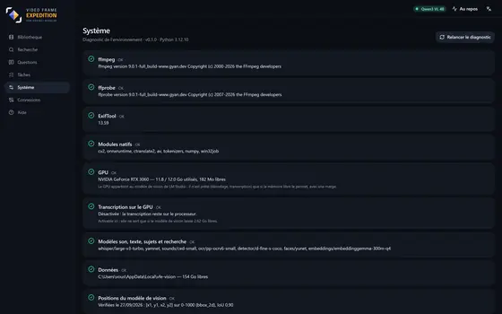
Page entièreWhole page
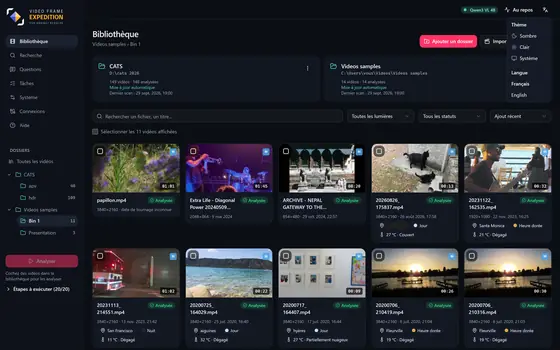
Page entièreWhole pageLa page Banc d'essai : choisir son modèle de vision The Model bench page: choosing your vision model
LM Studio propose des dizaines de modèles de vision, et la mémoire de la carte graphique n'est pas extensible : un petit modèle suffit-il ? La page liste les modèles de vision que LM Studio possède. Cochez ceux à comparer, puis lancez le test. Chacun est chargé seul, interrogé comme le font les analyses sur les mêmes images de votre bibliothèque — 12, 24 ou 48, toujours les mêmes d'un test à l'autre —, puis déchargé. Le modèle chargé avant le test revient à la fin, avec ses réglages. Pendant ce temps les analyses attendent, et rien n'est modifié dans la bibliothèque. LM Studio offers dozens of vision models, and the graphics card's memory does not stretch: is a small model enough? The page lists the vision models LM Studio holds. Tick the ones to compare, then start the test. Each one is loaded alone, asked what the analyses ask about the same frames of your library — 12, 24 or 48, always the same from one test to the next — then unloaded. The model that was loaded before the test comes back at the end, with its settings. Meanwhile the analyses wait, and nothing changes in the library.
Le tableau donne ensuite, pour chaque modèle : la mémoire qu'il occupe sur la carte et ce qu'il en reste pour DaVinci Resolve et la transcription ; le temps par image ; les réponses valides ; le respect de la langue demandée ; le texte lu, comparé à la lecture optique de l'application ; les positions des personnes et des animaux, comparées à celles du détecteur de l'application. La meilleure valeur de chaque colonne est mise en valeur. The table then gives, for each model: the memory it takes on the card and what is left for DaVinci Resolve and transcription; the time per frame; the valid answers; whether the language asked for is kept; the text read, compared with the application's own text reading; the positions of people and animals, compared with those of the application's detector. The best value of each column stands out.
Reste la justesse des descriptions, qu'aucune machine ne mesure à votre place : « Juger à l'aveugle » montre chaque image et ce que chaque modèle en a dit, sous des lettres qui changent à chaque image. Vous notez de « faux » à « juste » sans savoir qui a écrit quoi, et la moyenne rejoint le tableau. What remains is how right the descriptions are, which no machine measures for you: "Blind rating" shows each frame and what each model said of it, under letters that change with every frame. You rate from "wrong" to "right" without knowing who wrote what, and the mean joins the table.
Les mêmes mesures sont aussi tracées. Le graphique « Mémoire et vitesse » place chaque modèle selon la mémoire qu'il occupe et son temps par image : le meilleur coin est en bas à gauche. Six graphiques en barres comparent ensuite les modèles mesure par mesure. The same measures are also drawn. The "Memory and speed" chart places each model by the memory it takes and its time per frame: the best corner is the bottom left one. Six bar charts then compare the models measure by measure.
L'historique garde chaque test : un clic le réaffiche, et une note de votre main aide à le retrouver (« avant la mise à jour de LM Studio »). « Classement général » met côte à côte le dernier résultat de chaque modèle, tous tests confondus : un modèle téléchargé aujourd'hui se compare à ceux du mois dernier sans les tester à nouveau. La page prévient quand ces tests n'ont pas porté sur les mêmes images ; seules la mémoire et la vitesse se comparent alors exactement. The history keeps every test: one click shows it again, and a note of your own helps you find it ("before the LM Studio update"). "General ranking" puts the latest result of every model side by side, all tests together: a model downloaded today compares with last month's without testing them again. The page warns when these tests did not use the same frames; only memory and speed then compare exactly.
Un test, comme le classement général, commence par un classement. Chaque mesure y devient des points sur 100 : la part de la carte laissée libre pour la mémoire, l'écart au plus rapide pour la vitesse, le pourcentage mesuré pour la langue, le texte et les positions, la moyenne de vos notes pour la qualité. Le classement total fait la moyenne de ces points, sur les seules mesures que tous les modèles ont. Le réglage « Ce qui compte le plus » fait compter triple la mémoire, la vitesse ou la qualité. Le classement par mesure donne la place de chaque modèle, et les profils dessinent chacun en étoile : plus la surface est grande, meilleur est le modèle. A test, like the general ranking, opens with a ranking. Each measure becomes points out of 100: the share of the card left free for memory, the gap to the fastest for speed, the share measured for language, text and positions, the mean of your ratings for quality. The overall ranking is the mean of these points, on the measures every model has. The "What matters most" setting makes memory, speed or quality count three times. The ranking by measure gives each model's place, and the profiles draw each one as a star: the larger the surface, the better the model.

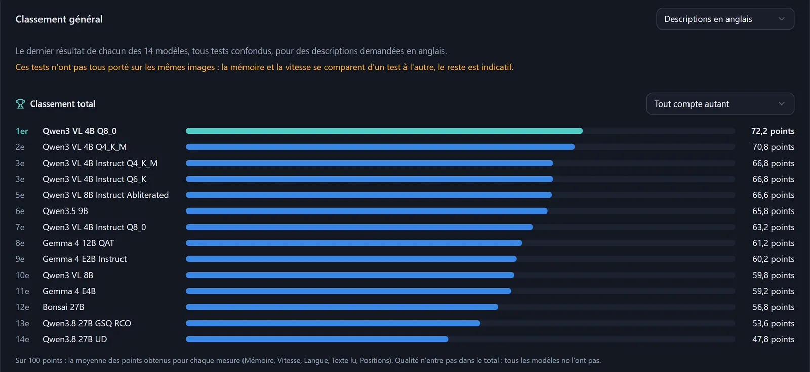

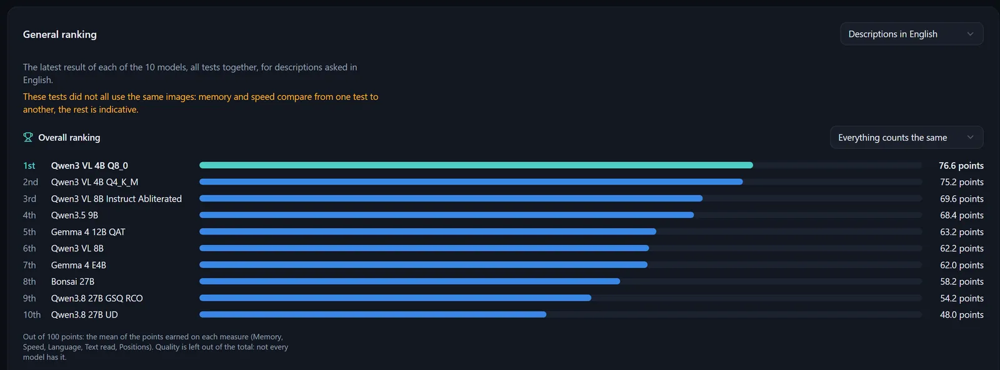

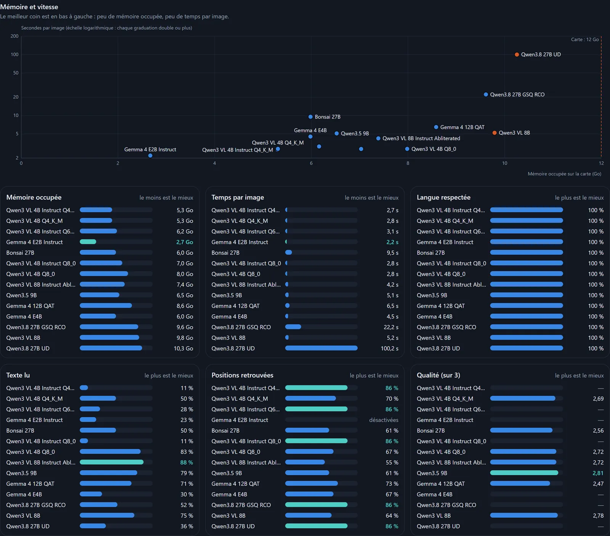

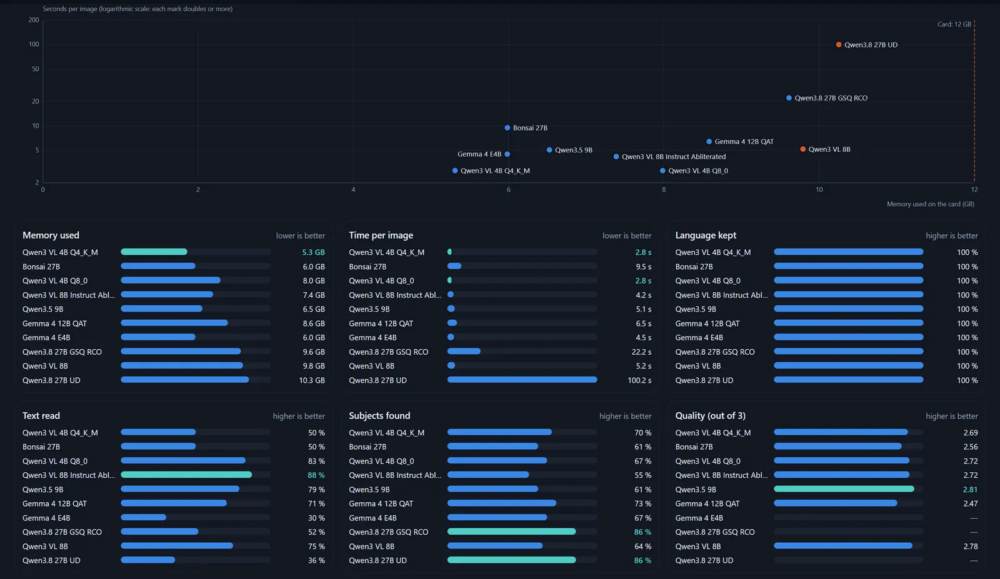

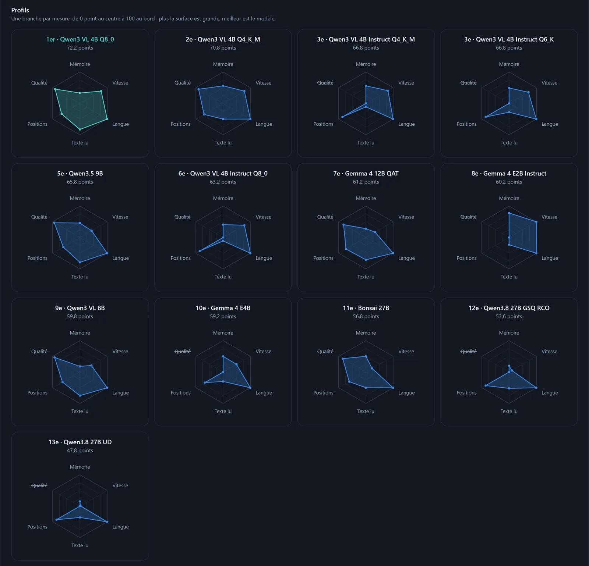

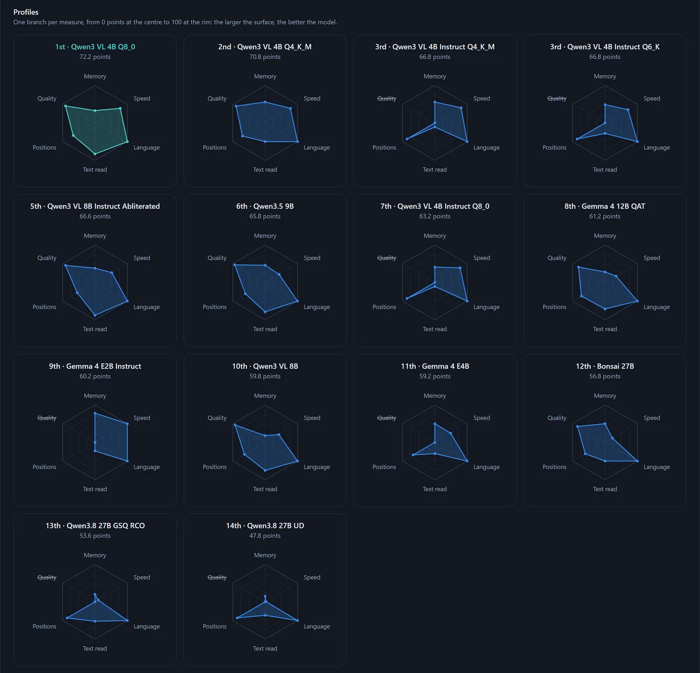
Pour développer l'application To develop the application
Rien de tout cela n'est nécessaire pour se servir de l'application. Les tâches de
développement passent par just (winget install Casey.Just), avec pnpm pour l'interface. just est
facultatif : chaque recette du justfile se lance aussi à la main
si Smart App Control bloque just.exe.
Rien de tout cela n'est nécessaire pour se servir de l'application. Les tâches de
développement passent par just (brew install just), avec pnpm pour l'interface. just est
facultatif : chaque recette du justfile se lance aussi à la
main.
None of this is needed to use the application. The development tasks go through
just (winget install Casey.Just),
with pnpm for the interface. just is optional: every
recipe of the justfile can also be run by hand if Smart App Control
blocks just.exe.
None of this is needed to use the application. The development tasks go through
just (brew install just), with
pnpm for the interface. just is optional: every recipe
of the justfile can also be run by hand.
just setup # dépendances, et le hook de pre-commit# dependencies, and the pre-commit hook
just build # construit l'interface web# builds the web interface
just serve # lance l'application sur http://127.0.0.1:8765# serves the application on http://127.0.0.1:8765
just check # lint, typage strict, contrats d'architecture et tests# lint, strict typing, architecture contracts and testsPartie 3Part 3
La bibliothèqueThe library
Vous déclarez un dossier, l'application le lit. Elle n'y touche pas, ne réencode rien, ne déplace rien : toutes ses données vivent ailleurs. You declare a folder, the application reads it. It does not touch it, re-encode anything or move anything: all its own data lives elsewhere.
Ajouter un dossierAdd a folder
Le chemin, un nom d'affichage si vous voulez, et deux interrupteurs : inclure les sous-dossiers, et la mise à jour automatique — le dossier est alors surveillé, les vidéos ajoutées ou modifiées sont trouvées et analysées sans rien faire. The path, a display name if you want one, and two switches: include sub-folders, and automatic update — the folder is then watched, and videos added or changed are found and analysed with no further action.
L'objectif d'analyse est le champ qu'on oublie, et c'est dommage. En une phrase — « ce qui compte pour moi dans ces rushs : sujets, ambiances, usages prévus » — vous orientez ce que le modèle de vision cherchera et écrira. Un dossier de documentaire animalier et un dossier de conférence n'appellent pas les mêmes descriptions. The analysis brief is the field people skip, and that is a pity. In one sentence — "what matters to me in these rushes: subjects, moods, intended uses" — you steer what the vision model looks for and writes. A wildlife folder and a conference folder do not call for the same descriptions.

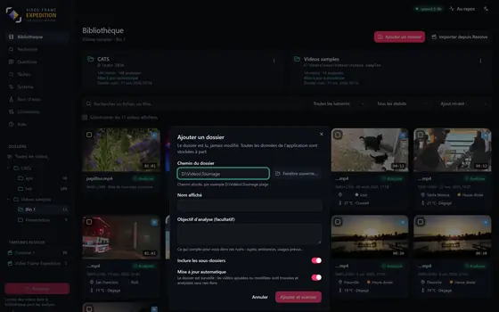
Page entièreWhole pageLa grille, et ce que porte une vignette The grid, and what a thumbnail carries
Chaque vignette porte le fruit de l'analyse : la définition, la date de tournage, le lieu, la phase de lumière (heure bleue, heure dorée, jour, nuit), la température et la météo du moment. Un badge dit l'orientation, un autre l'état de l'analyse. Each thumbnail carries what the analysis found: the resolution, the shooting date, the place, the light phase (blue hour, golden hour, day, night), the temperature and the weather at the time. One badge gives the orientation, another the state of the analysis.
À gauche, vos dossiers apparaissent tels quels, sous-dossiers compris ; une timeline importée depuis DaVinci Resolve y prend place comme un chutier de plus. En haut, la recherche par nom et trois listes : la lumière, l'état, et l'ordre de tri. On the left, your folders appear as they are, sub-folders included; a timeline imported from DaVinci Resolve takes its place as one more bin. At the top, search by name and three lists: light, status, and sort order.

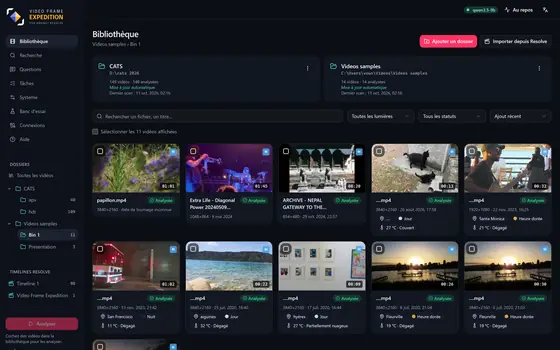
Page entièreWhole page
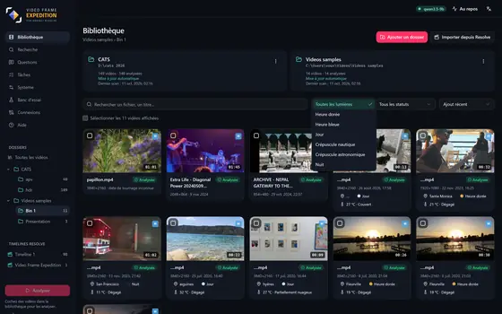
Page entièreWhole pageLa même page existe en thème clair, « Papier » : le thème suit celui du système et se force dans le menu des préférences (partie 2). The same page exists in the light theme, "Paper": the theme follows the system and can be forced from the preferences menu (part 2).
Cocher, puis agir Tick, then act
Dès qu'une vidéo est cochée, quatre actions apparaissent : analyser la sélection, l'exporter (les fichiers d'analyse à côté des vidéos), en tirer un CSV — un tableau d'une ligne par vidéo, pour Excel — et créer une timeline. As soon as a video is ticked, four actions appear: analyse the selection, export it (the analysis files next to the videos), draw a CSV from it — one row per video, for Excel — and create a timeline.

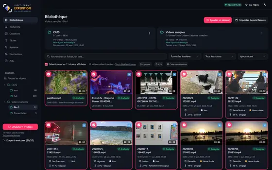
Page entièreWhole pageImporter une timeline de DaVinci Resolve Import a timeline from DaVinci Resolve
Quand Resolve est ouvert, l'application lit le projet en cours et propose ses timelines. En importer une l'ajoute à la bibliothèque comme un chutier : les vidéos qu'elle emploie sont rattachées au projet et à la timeline, avec leurs positions telles qu'elles étaient à la date de lecture. La recherche et les filtres savent alors travailler à l'intérieur de cette timeline. When Resolve is open, the application reads the current project and offers its timelines. Importing one adds it to the library as a bin: the videos it uses are tied to the project and the timeline, with their positions as read on that date. Search and filters can then work inside that timeline.
L'application lit le projet ; elle ne le modifie jamais. The application reads the project; it never changes it.

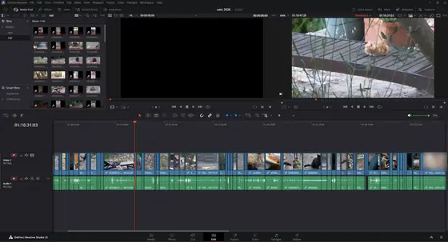
Page entièreWhole page
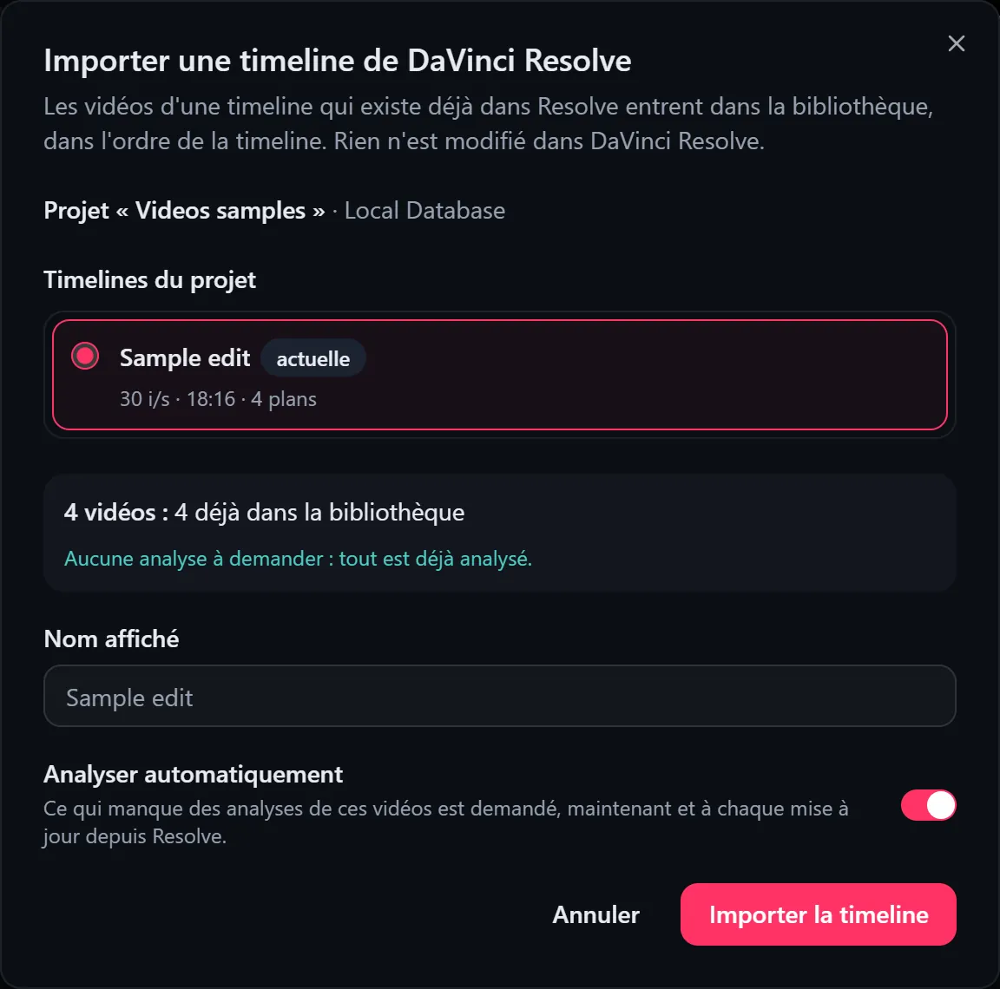

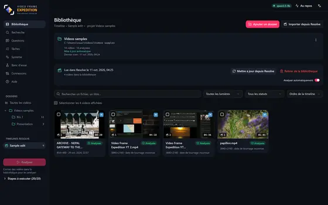
Page entièreWhole pagePartie 4Part 4
Vingt étapes, et ce qu'elles coûtent Twenty stages, and what each costs
Analyser une vidéo, ce n'est pas un bloc : c'est une suite d'étapes qui dépendent les unes des autres. Chacune sait ce qu'elle exige et où elle s'exécute ; une étape déjà faite n'est jamais refaite, et vous pouvez en décocher n'importe laquelle. Analysing a video is not one big step: it is a chain of stages that depend on one another. Each knows what it needs and where it runs; a stage already done is never redone, and you can switch any of them off.
Les vingt étapes, par famille The twenty stages, by family

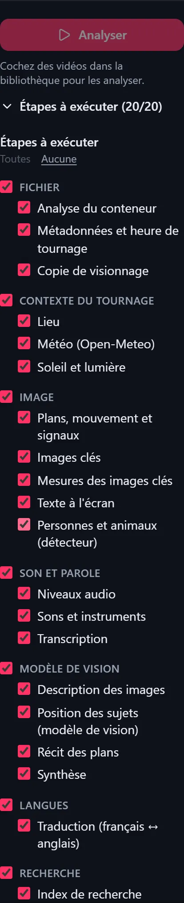

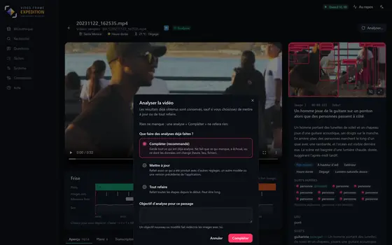
Page entièreWhole pageLa page TâchesThe Jobs page
Tout ce qui tourne, tout ce qui a tourné. Une analyse partielle — un modèle absent, une vidéo illisible — est marquée comme telle et se relance d'un clic, sans refaire ce qui avait réussi. L'indicateur en haut de l'écran suit l'état depuis n'importe quelle page ; vous pouvez fermer l'onglet, le travail continue. Everything running, and everything that has run. A partial analysis — a missing model, an unreadable video — is marked as such and restarts with one click, without redoing what had succeeded. The indicator at the top of the screen follows the state from any page; you can close the tab, the work carries on.
Sur un PC avec une carte RTX 3060 de 12 Go, comptez une quinzaine de secondes pour un plan de dix secondes, et de deux à six minutes pour une vidéo de dix minutes riche en parole et en texte. Sur un Mac, le temps dépend de la puce et de la mémoire : la page Banc d'essai mesure celui du modèle de vision. Deux vidéos sont traitées de front. On a PC with a 12 GB RTX 3060 card, expect around fifteen seconds for a ten-second clip, and two to six minutes for a ten-minute video dense in speech and text. On a Mac, the time depends on the chip and the memory: the Model bench page measures the vision model's. Two videos are processed at a time.

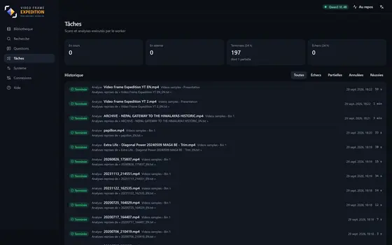
Page entièreWhole pagePartie 5Part 5
La page d'une vidéoA video's page
C'est l'écran où l'on passe le plus de temps. Deux colonnes : à gauche le lecteur, la frise et les sept onglets ; à droite un panneau qui décrit l'image clé du moment et ne change jamais d'onglet en onglet. This is where you spend most of your time. Two columns: on the left the player, the strip and the seven tabs; on the right a panel describing the keyframe at that moment, which stays put whatever tab you are on.

La friseThe strip
Elle empile, sur une seule échelle de temps : les chapitres, les plans colorés par mouvement de caméra, les images clés, les moments forts suggérés, et la forme d'onde du son. Un coup d'œil suffit à voir où la vidéo bouge, où l'on parle, où elle se tait. It stacks, on a single time scale: the chapters, the shots coloured by camera movement, the keyframes, the suggested highlights, and the audio waveform. One glance shows where the video moves, where people speak, where it falls quiet.
Cliquez pour vous déplacer. Au clavier : ← → pour une seconde, avec Maj pour dix, et Pg préc. Pg suiv. pour sauter de plan en plan. Click to move. From the keyboard: ← → for one second, with Shift for ten, and Page Up Page Down to jump from shot to shot.

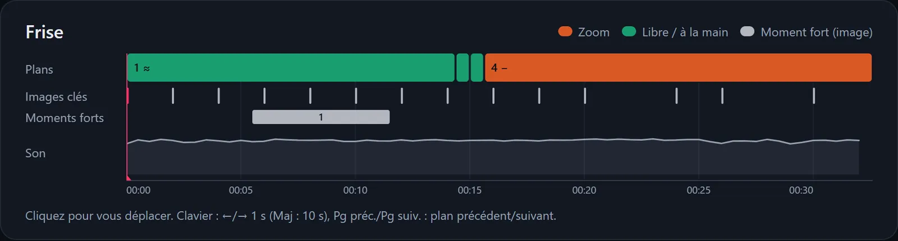
Le panneau de droite : l'image clé, décrite The right-hand panel: the keyframe, described
Il suit le lecteur. Pour l'image clé du moment, il donne : son titre et sa description écrits par le modèle de vision, puis des étiquettes — le cadrage (gros plan, plan moyen, plan large), la hauteur de caméra, intérieur ou extérieur, la phase de lumière, la météo visible, la qualité de la lumière. It follows the player. For the keyframe at that moment it gives: its title and description written by the vision model, then labels — the framing (close-up, medium, wide), the camera height, indoor or outdoor, the light phase, the visible weather, the quality of the light.
Viennent ensuite les sujets repérés — une pastille par être vivant trouvé, et sur l'image un cadre autour de chacun —, le lieu tel que le modèle le voit, les sujets décrits un à un, les actions, l'ambiance, les couleurs dominantes, le texte détecté quand il y en a, les usages au montage, les défauts techniques et les mots-clés. En bas, le nom du modèle qui a écrit tout cela. Then come the subjects found — one chip per living being, and on the image a box around each —, the place as the model sees it, the subjects described one by one, the actions, the mood, the dominant colours, the detected text when there is any, the editing uses, the technical flaws and the keywords. At the bottom, the name of the model that wrote all of it.
Des positions, pas des identités.
Les cadres disent où se trouve un être vivant, jamais qui il est.
Aucune empreinte de visage n'est calculée ni conservée. Ces cadres servent à
recadrer un plan pour un autre format — c'est ce que l'outil MCP
get_reframe exploite.
Positions, not identities.
The boxes say where a living being is, never who it is. No face
signature is computed or kept. Those boxes are what lets a shot be reframed for
another aspect ratio — which is what the MCP tool get_reframe uses.

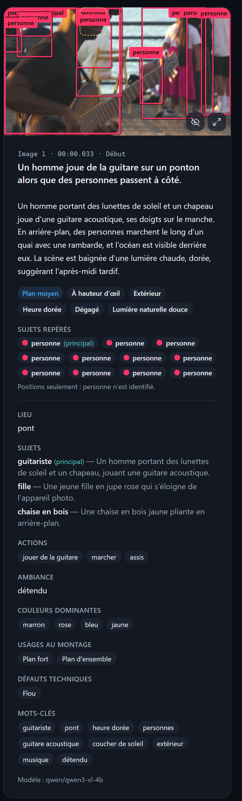
Tournage, appareil, et le doute assumé Shoot, device, and honest doubt
La date de tournage n'est pas toujours fiable, et l'application le dit. Elle affiche la date qu'elle retient, d'où elle la tient, et un verdict : Fiable (« nom du fichier, confirmé par la date du conteneur ») ou Incertaine (« seule la date d'export est connue »). Le fuseau horaire est déduit hors ligne de la position. « 6 dates trouvées dans le fichier » se déplie : vous voyez toutes les dates concurrentes, et pourquoi celle-là a été choisie. The shooting date is not always trustworthy, and the application says so. It shows the date it settles on, where it got it, and a verdict: Reliable ("file name, confirmed by the container date") or Uncertain ("only the export date is known"). The time zone is worked out offline from the position. "6 dates found in the file" unfolds: you see every competing date, and why that one was chosen.

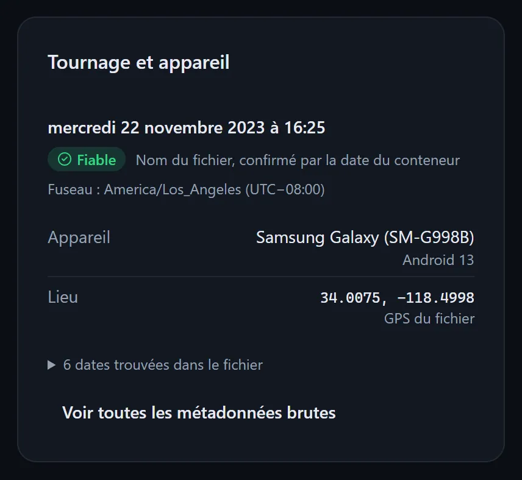

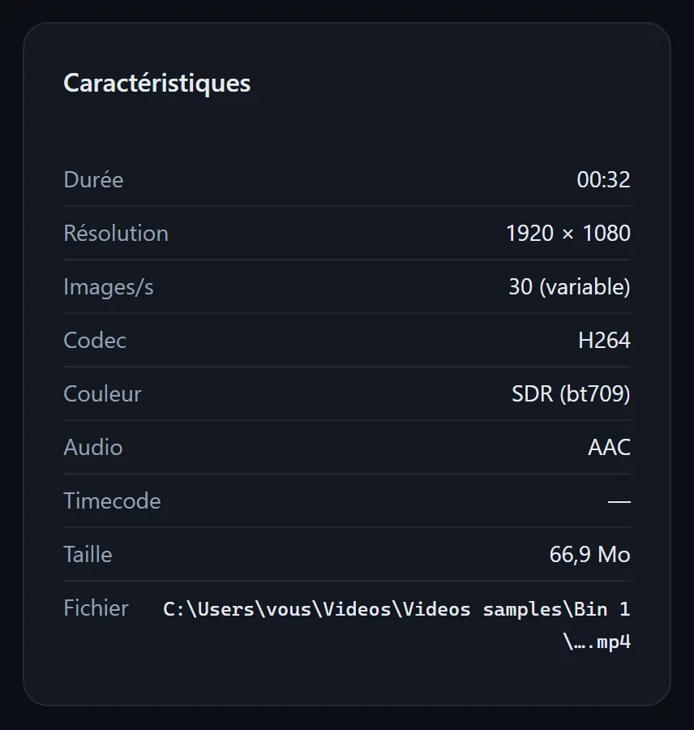

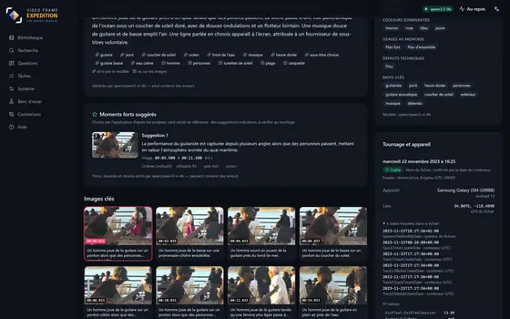
Page entièreWhole pageCe qui a été fait, et en combien de temps What was done, and how long it took
Tout en bas du panneau, les vingt étapes de cette vidéo, chacune avec sa durée et son verdict — réussie, ignorée, en échec. Un bouton par ligne la relance, elle et les étapes qui dépendaient de son résultat. Right at the bottom of the panel, the twenty stages of this video, each with its duration and verdict — succeeded, skipped, failed. One button per row runs it again, along with the stages that depended on its result.

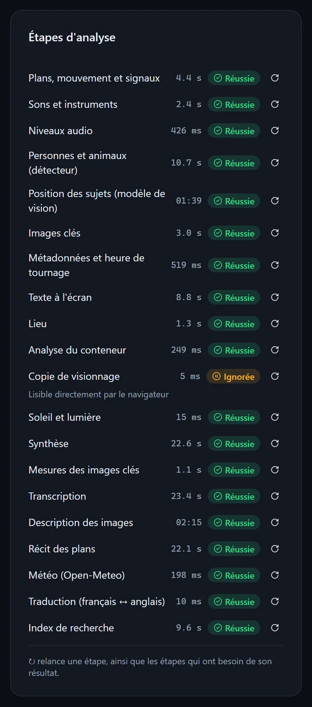
Partie 6Part 6
Les sept ongletsThe seven tabs
Aperçu, Plans, Transcription, Sons, Technique, Contexte, Exports. Le panneau de droite ne bouge pas ; seule la colonne de gauche change. Overview, Shots, Transcript, Sounds, Technical, Context, Exports. The right-hand panel stays put; only the left column changes.
1 · Aperçu — la synthèse et les images clés 1 · Overview — the synthesis and the keyframes
La synthèse est ce que le modèle retient de la vidéo entière : un titre, un résumé de quelques lignes, des mots-clés, et des chapitres. Chaque mot-clé porte son origine — « écrit par le modèle » ou « vu sur les images ». Un bouton la régénère si elle vous déplaît. The synthesis is what the model takes away from the whole video: a title, a summary of a few lines, keywords, and chapters. Each keyword carries its origin — "written by the model" or "seen in the images". A button regenerates it if you do not like it.
Les moments forts suggérés viennent ensuite : des passages avec leurs points d'entrée et de sortie, une raison, et des critères indicatifs (utilisable 93, plan fort, action). Ce sont des propositions faites d'après les analyses, sans vérité de référence : à vérifier au montage. The suggested highlights come next: passages with their in and out points, a reason, and indicative criteria (usable 93, strong shot, action). They are proposals drawn from the analyses, with no ground truth: check them at the edit.
Enfin la grille des images clés, chacune horodatée et décrite en une phrase. Un clic place le lecteur dessus. Finally the grid of keyframes, each time-stamped and described in one sentence. Clicking one puts the player there.

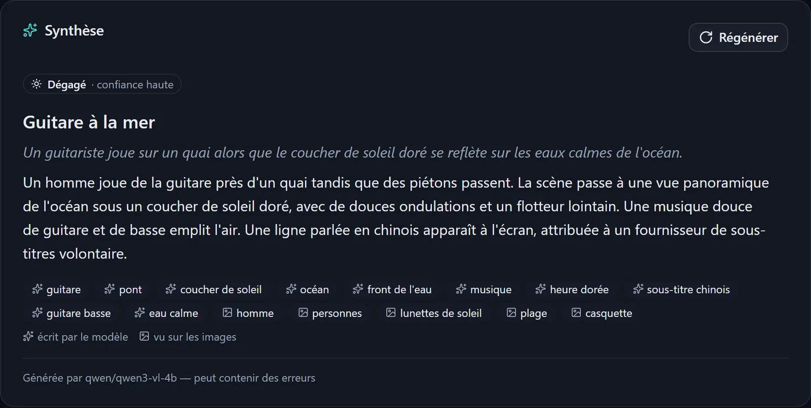

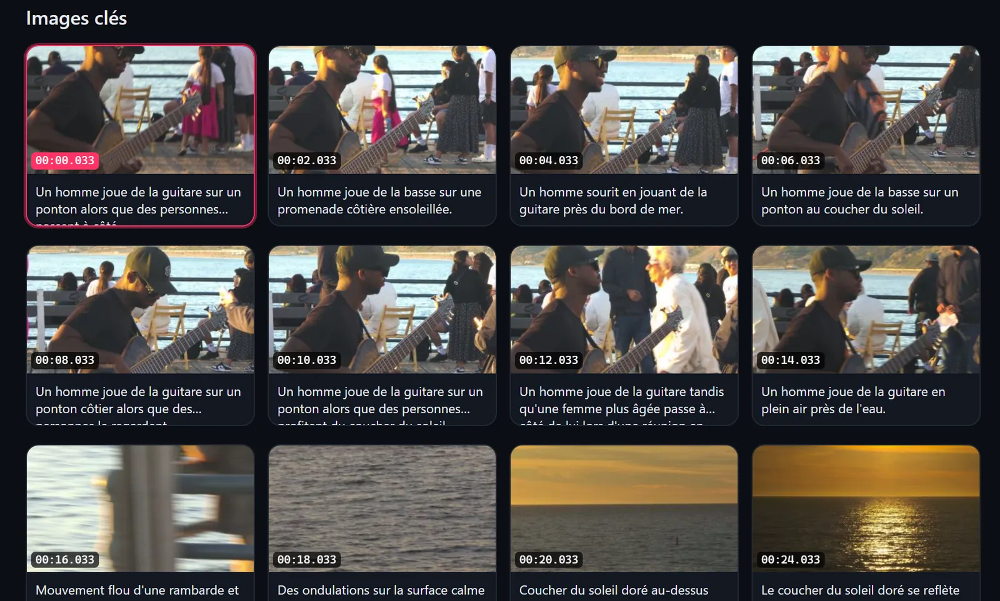
2 · Plans — un tableau, et deux avis 2 · Shots — a table, and two opinions
Un plan par ligne, avec son mouvement de caméra (fixe, libre à la main, zoom, panoramique), sa stabilité en pourcentage, sa durée, sa luminosité et sa température de couleur. One shot per row, with its camera movement (fixed, handheld, zoom, pan), its stability as a percentage, its duration, its brightness and its colour temperature.
Sous chaque plan, deux suggestions : une utilisabilité de 0 à 100 et un rôle de montage — plan d'ensemble, plan de coupe, détail, illustration, à éviter. Ce sont des avis, pas des vérités : ils trient, ils ne décident pas. Le récit de chaque plan, lui, est écrit par le modèle de vision à partir de plusieurs images dans l'ordre : un insecte qui s'envole, une main qui ajoute un ingrédient. Under each shot, two suggestions: a usability score from 0 to 100 and an editing role — establishing shot, cutaway, detail, illustration, avoid. They are opinions, not truths: they sort, they do not decide. The story of each shot is written by the vision model from several frames in order: an insect taking off, a hand adding an ingredient.


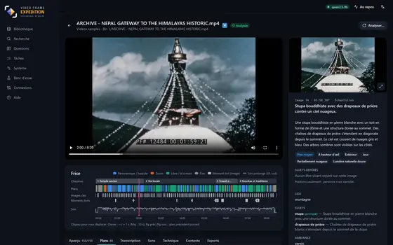
Page entièreWhole page3 · Transcription — ce qui est dit, et quand 3 · Transcript — what is said, and when
Whisper large-v3-turbo transcrit la parole dans un processus à part, avec la détection d'activité vocale de Silero pour ne pas inventer de mots dans le silence. Chaque segment porte son temps : un clic place le lecteur dessus. Whisper large-v3-turbo transcribes speech in a separate process, with Silero voice-activity detection so that it does not invent words in the silence. Each segment carries its time: one click puts the player there.
La langue parlée est reconnue, et la transcription reste dans cette langue — c'est l'étape « Traduction » qui produit l'autre version. Le même texte ressort en sous-titres SRT et VTT dans l'onglet Exports. The spoken language is detected, and the transcript stays in that language — the "Translation" stage produces the other version. The same text comes out as SRT and VTT subtitles in the Exports tab.

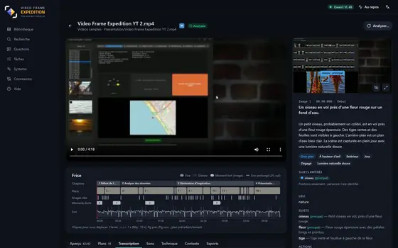
Page entièreWhole page4 · Sons — ce qu'on entend, et les instruments 4 · Sounds — what is heard, and the instruments
Quatre blocs. Ce qu'on entend donne les grandes catégories et la part de la durée qu'elles occupent — parole, musique, nature, silence. Les parts peuvent se chevaucher : plusieurs sons se superposent, elles ne s'additionnent pas à cent. Four blocks. What is heard gives the broad categories and the share of the duration they occupy — speech, music, nature, silence. The shares can overlap: several sounds happen at once, so they do not add up to a hundred.
Sons entendus nomme ce qui a été reconnu précisément, avec la durée totale et les moments où on l'entend : un clic écoute. Instruments fait de même pour la musique. Et Par plan redistribue le tout plan par plan. Sounds heard names what was recognised precisely, with the total duration and the moments where it is heard: one click listens. Instruments does the same for music. And Per shot lays it all out shot by shot.
La reconnaissance est faite par YAMNet, avec le second avis de CED-small, sur les classes d'AudioSet. Elle est indicative, et l'application le dit à l'écran quand le niveau est trop faible pour qu'on s'y fie. Recognition is done by YAMNet, with a second opinion from CED-small, over the AudioSet classes. It is indicative, and the application says so on screen when the level is too low to be trusted.

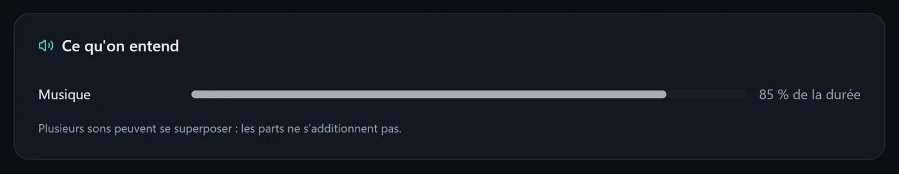

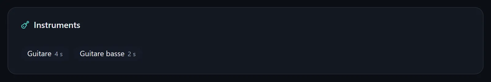

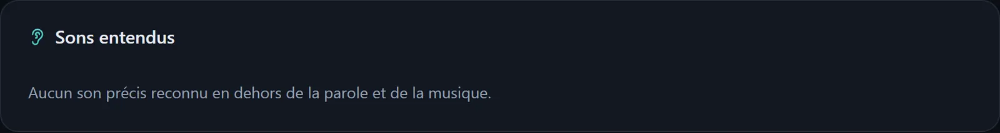

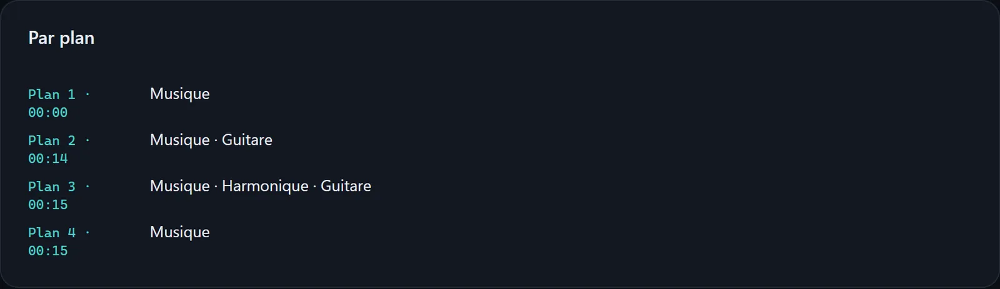
Quatre vidéos, parce qu'aucune ne montre tout Four videos, because none shows it all
Ce que cet onglet affiche dépend entièrement de ce qu'il y a dans le son. Les quatre pages ci-dessous couvrent les cas. What this tab shows depends entirely on what is in the sound. The four pages below cover the cases.


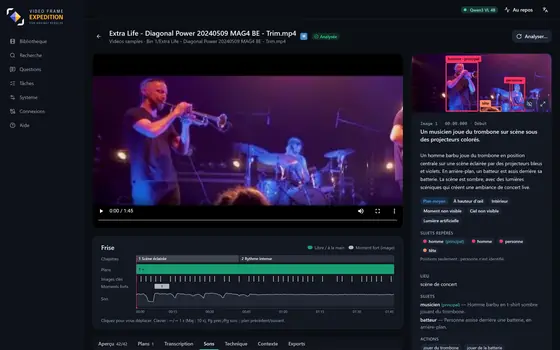
Page entièreWhole page
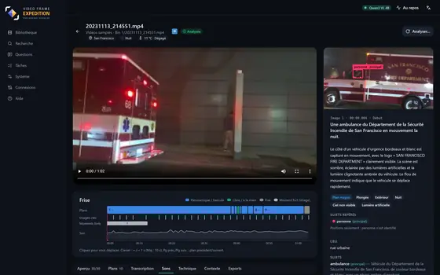
Page entièreWhole page5 · Technique — sept courbes, et un tableau 5 · Technical — seven curves, and a table
En haut, six tuiles de résumé : loudness intégrée (en LUFS, avec sa plage), crête vraie (en dBTP), silences, température médiane avec le nom de la lumière, luminosité médiane, et le nombre de plans dont ceux avec mouvement de caméra. At the top, six summary tiles: integrated loudness (in LUFS, with its range), true peak (in dBTP), silences, median temperature with the name of the light, median brightness, and the number of shots including those with camera movement.
Puis Mesures dans le temps : sept courbes tracées sur toute la durée — luminosité, contraste, saturation, température de couleur, mouvement dans l'image (flux optique), netteté (variance du laplacien), et loudness momentanée. Un bouton bascule les mêmes valeurs en tableau. Enfin, Mesures par image clé : température, luminosité, noirs et blancs bouchés, netteté, couleurs dominantes. Then Measurements over time: seven curves drawn across the whole duration — brightness, contrast, saturation, colour temperature, motion in frame (optical flow), sharpness (Laplacian variance), and momentary loudness. A button flips the same values into a table. Finally, Measurements per keyframe: temperature, brightness, crushed blacks and blown whites, sharpness, dominant colours.

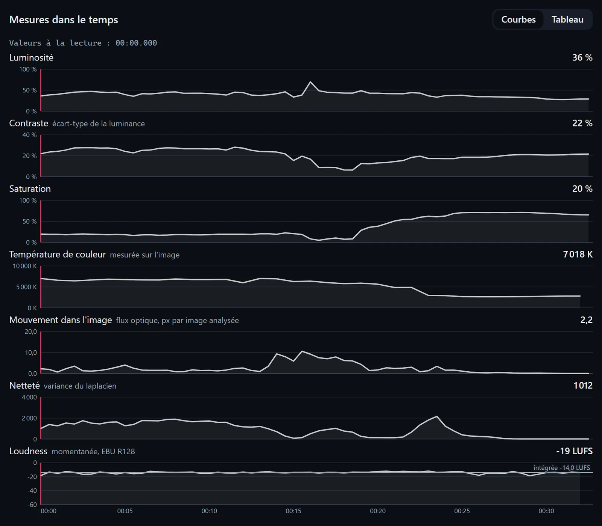

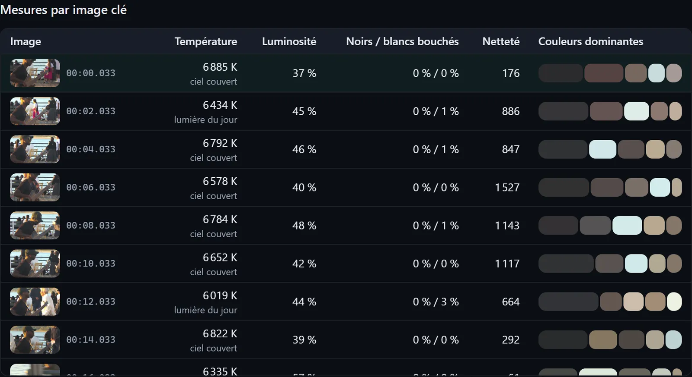
6 · Contexte — le lieu, le soleil, la météo 6 · Context — the place, the sun, the weather
C'est l'onglet le plus dense, et celui qui distingue le plus l'application. Quand le fichier porte des coordonnées GPS, tout le reste s'en déduit. This is the densest tab, and the one that sets the application apart most. When the file carries GPS coordinates, everything else follows from them.
Le lieuThe place
Une carte OpenStreetMap, l'adresse résolue, les coordonnées en décimal et en degrés-minutes-secondes, la source de la position (le GPS du fichier, ou autre chose), et — ce qui compte — ce qui a été envoyé : « point arrondi (≈ 70 m) ». Deux boutons copient les coordonnées ou ouvrent le lieu dans OpenStreetMap. An OpenStreetMap map, the resolved address, the coordinates in decimal and in degrees-minutes-seconds, the source of the position (the file's GPS, or something else), and — what matters — what was sent: "rounded point (≈ 70 m)". Two buttons copy the coordinates or open the place in OpenStreetMap.

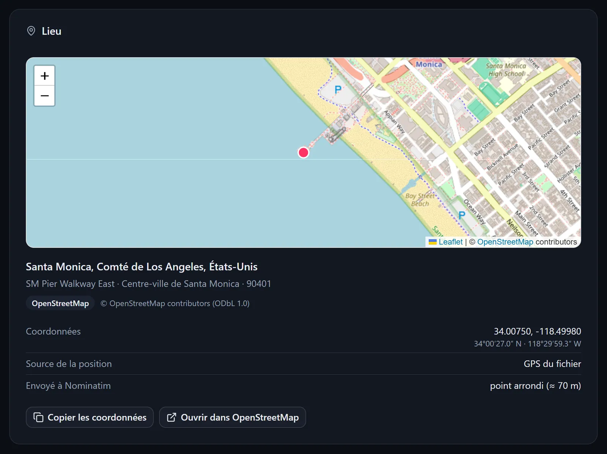
Le soleil, et la hauteur qu'il avait The sun, and how high it stood
Quatre tuiles : la phase de lumière (heure dorée du soir…), la hauteur du soleil en degrés au-dessus de l'horizon, son azimut, et la température de couleur théorique du ciel. Puis une courbe de la hauteur du soleil sur toute la journée, en heure locale, avec le moment du tournage marqué dessus — et sous elle une bande qui découpe le jour en phases : nuit, crépuscule astronomique, crépuscule nautique, heure bleue, heure dorée, jour. Four tiles: the light phase (evening golden hour…), the sun's height in degrees above the horizon, its azimuth, and the sky's theoretical colour temperature. Then a curve of the sun's height across the whole day, in local time, with the moment of the shoot marked on it — and under it a band cutting the day into phases: night, astronomical twilight, nautical twilight, blue hour, golden hour, day.
Un tableau donne ensuite les heures : le tournage, le lever, le coucher, les deux heures dorées et le midi solaire. Enfin, la lumière naturelle théorique est confrontée à celle mesurée sur les images — et l'application conclut : « balance mesurée cohérente avec la lumière naturelle ». C'est ce qui permet de repérer un plan dont la balance des blancs a dérivé. A table then gives the times: the shoot, sunrise, sunset, both golden hours and solar noon. Finally, the theoretical natural light is set against the one measured on the images — and the application concludes: "measured balance consistent with natural light". That is what spots a shot whose white balance has drifted.

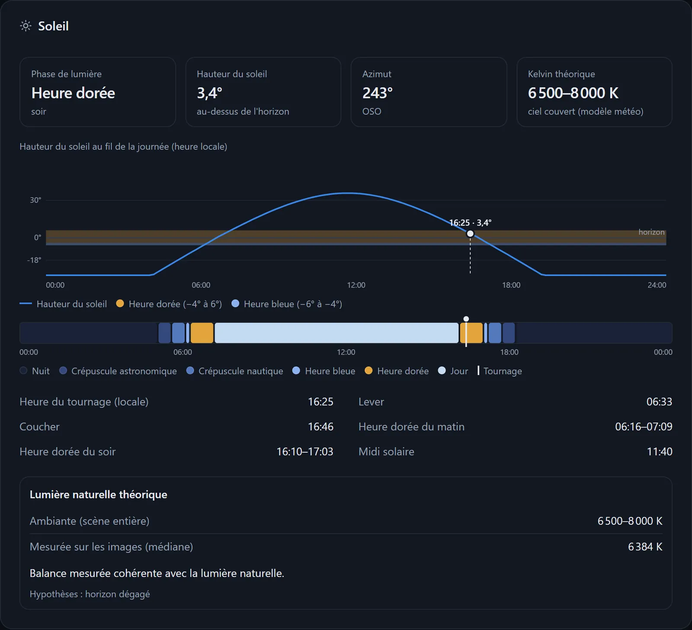
La météoThe weather
Conditions, température et température ressentie, vent et rafales, couverture nuageuse par étage, humidité, visibilité, rayonnement, précipitations, pression. Le tout vient des archives d'Open-Meteo, à haute résolution. Conditions, temperature and feels-like, wind and gusts, cloud cover by layer, humidity, visibility, radiation, rainfall, pressure. All of it from Open-Meteo's high-resolution archive.
L'application ouvre ce bloc par une mise en garde qu'il faut lire : « estimation d'un modèle météo (cellule à 1,2 km), pas une observation : les images font foi pour le ciel visible ». The application opens this block with a caveat worth reading: "an estimate from a weather model (1.2 km cell), not an observation: the images are what count for the sky you can see".

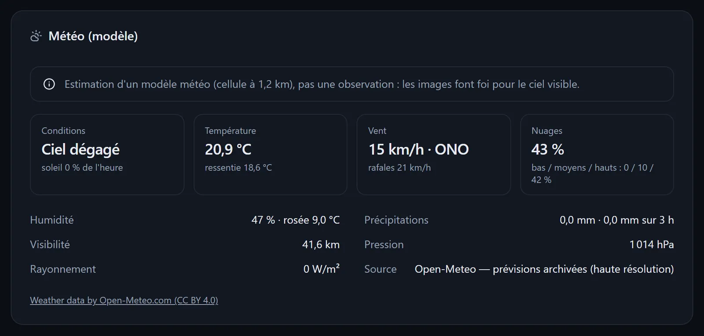

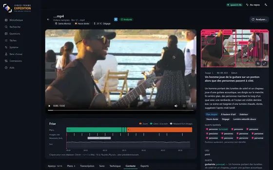
Page entièreWhole page
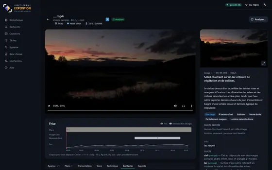
Page entièreWhole page7 · Exports — huit formats 7 · Exports — eight formats
Par vidéo, et rien n'est écrit à côté du fichier tant que vous ne le demandez pas.
Le suffixe de langue (_FR, _EN) suit la langue de
l'interface.
Per video, and nothing is written next to the file unless you ask. The language
suffix (_FR, _EN) follows the interface language.
| FormatFormat | Ce que c'estWhat it is |
|---|---|
_FR.srt |
Les sous-titres de la parole, calibrés pour Resolve : 42 caractères par ligne, deux lignes au plus, temps depuis la première image du fichier. Speech subtitles, set up for Resolve: 42 characters per line, two lines at most, timed from the file's first frame. |
_FR.vtt |
Les mêmes sous-titres, pour le web et les lecteurs HTML5. The same subtitles, for the web and HTML5 players. |
_SHOTS_FR.csv |
Un plan par ligne : temps, timecodes, mouvement, utilisabilité, rôle, ce qui se passe, sujets, parole. S'ouvre dans Excel (séparateur « ; », virgule décimale). One shot per row: times, timecodes, movement, usability, role, what happens, subjects, speech. Opens in Excel. |
_CHAPTERS_FR.txt |
Des lignes « 00:00 Titre », à coller dans la description d'une vidéo YouTube. Lines of "00:00 Title", to paste into a YouTube description. |
_MARKERS_FR.edl |
Chapitres, moments forts et débuts de plans, en marqueurs pour Resolve (Fichier › Importer › Timeline Markers from EDL, timeline à 01:00:00:00). Chapters, highlights and shot starts, as markers for Resolve (File › Import › Timeline Markers from EDL, timeline at 01:00:00:00). |
_FR.json |
Toute l'analyse, sans les images : le contenu même du fichier d'analyse. The whole analysis, without the images: the very content of the analysis file. |
_MANIFEST_FR.md |
Une fiche lisible : fichier, contexte, résumé, chapitres, moments forts, plans. A readable sheet: file, context, summary, chapters, highlights, shots. |
_RESOLVE_FR.py |
Un script à lancer depuis Resolve (Workspace › Scripts) qui pose les chapitres et les moments forts en marqueurs, et les mots-clés, la description et les commentaires sur le clip du media pool. A script to run from Resolve (Workspace › Scripts) that lays the chapters and highlights as markers, and the keywords, description and comments onto the media pool clip. |
Les textes viennent de la vidéo et de modèles locaux : relisez-les avant de les publier. Les timecodes sont ceux du fichier, ou 00:00:00:00 s'il n'en porte pas. The texts come from the video and from local models: read them over before publishing. Timecodes are the file's own, or 00:00:00:00 if it carries none.

Partie 7Part 7
Chercher, et demanderSearch, and ask
Deux pages pour toute la bibliothèque. L'une cherche des passages, l'autre répond à une question — et les deux disent d'où vient ce qu'elles montrent. Two pages for the whole library. One finds passages, the other answers a question — and both say where what they show came from.
La recherche : par les mots et par le sens Search: by words and by meaning
Une seule barre, et elle cherche dans tout ce qui a été relevé : ce qui se voit (descriptions des images, récits des plans), ce qui se dit (transcription), ce qui s'entend (sons nommés), ce qui se lit (texte à l'écran), plus les lieux, les dates et les synthèses. One bar, searching everything that was recorded: what is seen (frame descriptions, shot stories), what is said (transcript), what is heard (named sounds), what is read (on-screen text), plus places, dates and syntheses.
Deux moteurs travaillent ensemble : les mots, et le sens — EmbeddingGemma, sur le processeur. Chaque résultat dit lequel des deux l'a trouvé, ou les deux. Cherchez « guitare », vous trouverez aussi un passage qui ne parle que de « musicien sur la plage ». Two engines work together: words, and meaning — EmbeddingGemma, on the CPU. Each result says which of the two found it, or both. Search for "guitar" and you will also get a passage that only mentions "a musician on the beach".
Onze filtres réduisent ensuite : la sorte de passage, la météo, la lumière, le lieu, les sujets, le cadrage, la présence de parole, l'utilisabilité minimale, l'appareil, l'orientation, le dossier — et deux dates. Un clic sur un passage ouvre la vidéo à la bonne seconde. Tout est dans l'adresse de la page : une recherche se met en favori et se partage telle quelle. Eleven filters then narrow it down: the kind of passage, the weather, the light, the place, the subjects, the framing, whether anyone speaks, a minimum usability, the device, the orientation, the folder — and two dates. Clicking a passage opens the video at the right second. All of it lives in the page's address: a search can be bookmarked and shared as it is.

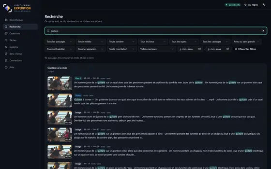
Page entièreWhole page
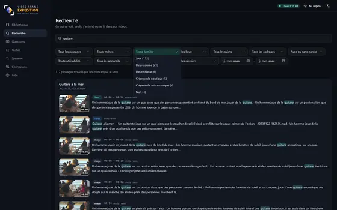
Page entièreWhole pageLes questions : une réponse qui cite ses sources Questions: an answer that cites its sources
Quand on ne sait pas quoi chercher, on demande. Le modèle chargé dans
LM Studio lit les passages trouvés et répond
uniquement à partir d'eux, en citant ses sources :
[1], [2], chacune cliquable, chacune ouvrant la vidéo au
bon moment. Les mêmes onze filtres limitent ce que le modèle a le droit de lire.
When you do not know what to look for, you ask. The model loaded in LM Studio
reads the passages found and answers
from those alone, citing its sources: [1],
[2], each clickable, each opening the video at the right moment. The
same eleven filters limit what the model is allowed to read.
L'option vérification visuelle fait regarder au modèle une à quatre images des moments qu'il a cités, pour confirmer ou corriger sa propre réponse. C'est plus lent, et c'est ce qui sépare une réponse plausible d'une réponse vérifiée. Les questions posées restent à gauche : on y revient sans refaire le travail. The visual check option makes the model look at one to four frames from the moments it cited, to confirm or correct its own answer. It is slower, and it is what separates a plausible answer from a checked one. Past questions stay on the left: you can come back to one without redoing the work.
Les questions et les passages restent sur cet ordinateur : ils ne vont qu'au modèle local de LM Studio. The questions and the passages stay on this computer: they only go to the local model in LM Studio.

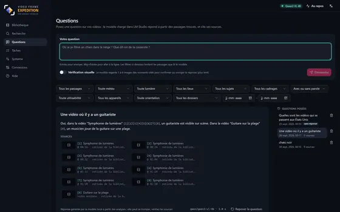
Page entièreWhole pagePartie 8Part 8
MonterEdit
Le but de tout ce qui précède : sortir de l'application avec quelque chose d'utilisable dans DaVinci Resolve. C'est l'un des deux sens ; l'autre — lire une timeline de Resolve pour l'analyser — est décrit dans « La bibliothèque ». The point of everything above: to leave the application with something usable in DaVinci Resolve. That is one of the two directions; the other — reading a Resolve timeline to analyse it — is described under "The library".
Créer une timelineCreate a timeline
Les vidéos cochées, entières et bout à bout, image et son. Vous choisissez le nom, l'ordre (date de tournage, nom de fichier, ou l'ordre dans lequel vous les avez cochées), la cadence et le format d'image — les plus fréquents parmi les vidéos retenues sont proposés d'office. The videos you ticked, whole and end to end, picture and sound. You choose the name, the order (shooting date, file name, or the order you ticked them in), the frame rate and the aspect ratio — the most common among the chosen videos are offered by default.
Quatre options, chacune annonçant ce qu'elle va produire : la transcription en sous-titres, les suggestions en marqueurs de durée (moments forts en vert, plans d'ensemble en cyan, illustrations en jaune, plans à éviter en rouge), les chapitres en marqueurs, et la description des plans en sous-titres sur une piste à part. Four options, each announcing what it will produce: the transcript as subtitles, the suggestions as duration markers (highlights in green, establishing shots in cyan, illustrations in yellow, shots to avoid in red), the chapters as markers, and the shot descriptions as subtitles on a track of their own.
En fichierAs files
« Télécharger les fichiers » donne un ZIP : un OTIO pour Resolve, un FCPXML pour Final Cut Pro, les fichiers SRT et un LISEZ-MOI. Dans Resolve : Fichier › Importer › Timeline. "Download the files" gives a ZIP: an OTIO for Resolve, an FCPXML for Final Cut Pro, the SRT files and a README. In Resolve: File › Import › Timeline.
Directement dans Resolve Straight into Resolve
Si Resolve est ouvert, « Ajouter au projet en cours » crée la timeline et l'ouvre. Les fichiers absents du media pool sont importés dans un chutier « Video Frame Expedition » ; les vôtres ne sont pas touchés. Les sous-titres sont posés sur la timeline, une piste par sorte, et écrits aussi à côté de chaque vidéo. If Resolve is open, "Add to the current project" creates the timeline and opens it. Files missing from the media pool are imported into a "Video Frame Expedition" bin; yours are left alone. The subtitles are laid on the timeline, one track per kind, and also written next to each video.

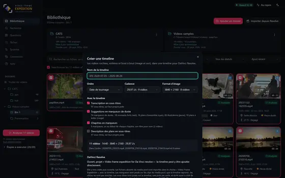
Page entièreWhole pageUne fois dans ResolveOnce inside Resolve
La timeline arrive avec ses pistes de sous-titres — une pour la transcription, une pour les plans — et ses marqueurs sur la règle. Les marqueurs de durée couvrent l'étendue du passage qu'ils désignent : un moment fort n'est pas un point, c'est une plage. The timeline arrives with its subtitle tracks — one for the transcript, one for the shots — and its markers on the ruler. Duration markers span the passage they mark: a highlight is not a point, it is a range.
Le script _RESOLVE_FR.py fait le reste sur le media pool : il
pose les chapitres et les moments forts en marqueurs sur le clip, et
écrit les mots-clés, la description et les commentaires dans ses champs. Vos
chutiers et vos timelines existants ne sont jamais modifiés.
The _RESOLVE_FR.py script does the rest on the media pool: it lays
the chapters and highlights as markers on the clip, and writes the
keywords, description and comments into its fields. Your existing bins and
timelines are never changed.

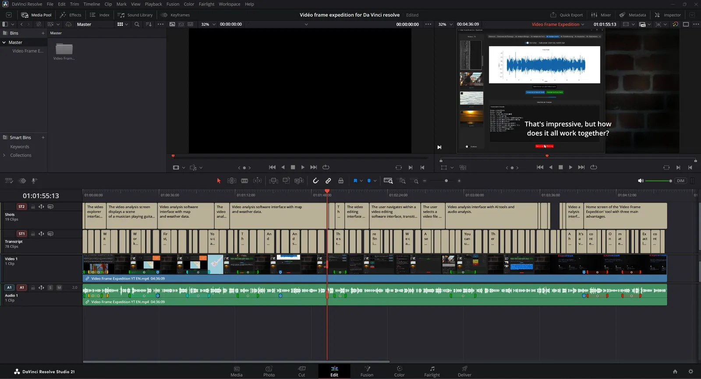

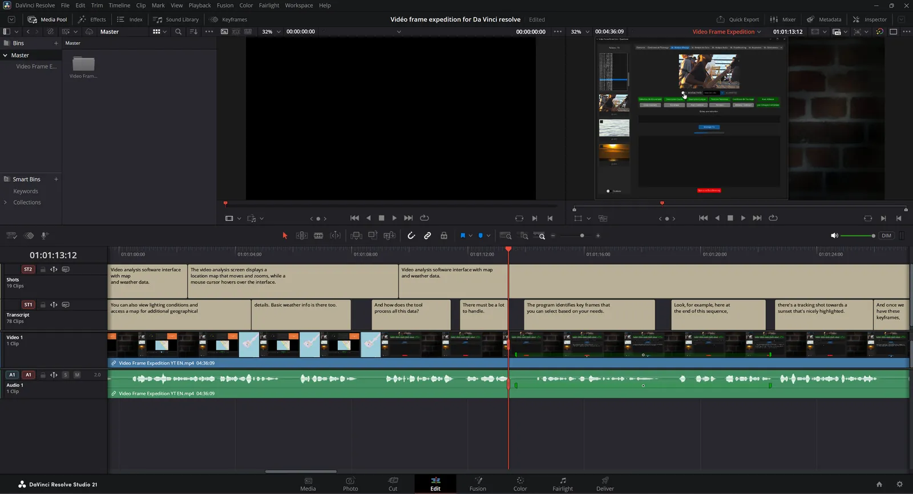
Partie 9Part 9
Brancher un assistantConnect an assistant
L'application expose ses analyses par un serveur MCP. Un assistant — Claude Code, Claude Desktop, Cursor, VS Code, Codex — peut alors chercher des plans, lire ce qui s'y dit, regarder des images, et préparer un montage. Les analyses sont déjà faites, et le modèle local reste disponible pour les tâches simples — répondre à une question sur la bibliothèque, situer un sujet : l'assistant, un modèle frontière plus coûteux, garde pour lui l'étage complexe et économise ses tokens. Pour agir dans DaVinci Resolve, deux voies : les outils Resolve de l'application, qu'une case active dans la page Connexions, ou le serveur de DaVinci Resolve Studio, branché sur le même assistant. Les schémas 04 et 05 de la partie 1 montrent les deux. The application exposes its analyses through an MCP server. An assistant — Claude Code, Claude Desktop, Cursor, VS Code, Codex — can then look for shots, read what is said in them, look at frames, and prepare an edit. The analyses are already done, and the local model stays available for simple tasks — answering a question about the library, locating a subject: the assistant, a costlier frontier model, keeps the complex tier for itself and saves its tokens. To act in DaVinci Resolve there are two routes: the application's Resolve tools, switched on by a box on the Connections page, or DaVinci Resolve Studio's own server, plugged into the same assistant. Diagrams 04 and 05 in part 1 show both.
La page ConnexionsThe Connections page
Elle rassemble tout : les adresses de l'interface et du
serveur MCP, sur cet ordinateur et depuis vos autres appareils ; le
jeton d'accès, qu'on peut afficher, copier et renouveler ;
des configurations prêtes à copier pour six clients ; une
section DaVinci Resolve qui détecte
ResolveMCP et donne la commande pour le brancher ; et la carte
Outils Resolve pour l'assistant, dont la case (décochée par
défaut) laisse l'assistant piloter Resolve par l'application.
It gathers everything: the addresses of the interface and of the
MCP server, on this computer and from your other devices; the
access token, which can be shown, copied and rotated;
ready-to-copy configurations for six clients; a
DaVinci Resolve section that detects
ResolveMCP and gives the command to plug it in; and the
Resolve tools for the assistant card, whose box (off by default)
lets the assistant drive Resolve through the application.
# Sur l'ordinateur de l'application# On the application's own machine
claude mcp add --scope user --transport http vfe-vision http://127.0.0.1:8765/mcp
# Ou le plugin Claude Code (la même connexion et un skill de montage, voir plus bas), dans Claude Code# Or the Claude Code plugin (the same connection and an editing skill, see below), inside Claude Code
/plugin marketplace add VideoFrameExpedition/video-frame-expedition-claude-plugin
/plugin install video-frame-expedition@video-frame-expedition
# Depuis un autre appareil, avec le jeton# From another device, with the token
claude mcp add --scope user --transport http vfe-vision http://100.x.y.z:8765/mcp --header "Authorization: Bearer <JETON><TOKEN>"
# Le serveur de DaVinci Resolve Studio, en stdio# DaVinci Resolve Studio's own server, over stdio
claude mcp add --scope user davinci-resolve -- "C:\Program Files\Blackmagic Design\DaVinci Resolve\ResolveMCP.exe"claude mcp add --scope user davinci-resolve -- '/Applications/DaVinci Resolve/DaVinci Resolve.app/Contents/Applications/ResolveMCP'
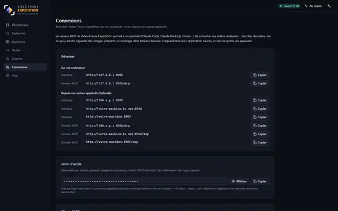
Page entièreWhole page
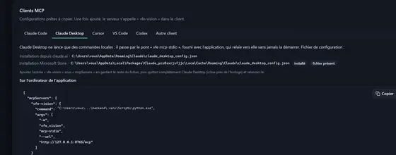
Page entièreWhole pageCe que l'assistant peut faire What the assistant can do
Chercher et lireFind and read
find_clips, search_memory, ask_library,
get_shots, get_transcript, get_frames,
get_video_context, get_synthesis,
get_object_locations
MonterEdit
match_clips, get_cut_points, get_reframe,
get_resolve_payload, export_video
SuivreFollow along
watch_video, analyze_folder, list_watched,
get_job, list_resolve_timelines,
import_resolve_timeline
Piloter ResolveDrive Resolve
read_timeline, plan_reframe,
build_timeline, apply_markers
— avec la case de la page Connexions.— with the box on the Connections page.
Ce que donne une séance What a session looks like
-
read_timelinelit la timeline ouverte dans Resolve et relie chaque clip à sa vidéo analysée, avec des plages justes en secondes ;match_clipsdit ce que contient chaque plage.read_timelinereads the timeline open in Resolve and ties each clip to its analysed video, with exact ranges in seconds;match_clipssays what each range holds. -
L'assistant choisit les plans (
find_clips,get_synthesis,get_frames) et demande àget_cut_pointsdes entrées et des sorties sûres : jamais au milieu d'un mot, avec les J-cut et les L-cut. The assistant picks the shots (find_clips,get_synthesis,get_frames) and asksget_cut_pointsfor safe ins and outs: never mid-word, with J-cuts and L-cuts. -
Pour un autre format (9:16…),
plan_reframeprépare le recadrage en local, avec le modèle de vision chargé dans LM Studio, et rend des planches de contrôle : l'assistant ne regarde que celles des plans signalés. For another aspect ratio (9:16…),plan_reframeprepares the reframing locally, with the vision model loaded in LM Studio, and returns contact sheets: the assistant only looks at those of the flagged shots. -
build_timelinemonte dans une timeline neuve, « … - vfe vN », avec ces recadrages, relit chaque durée et chaque valeur, etapply_markerspose chapitres, moments forts et métadonnées. Pour l'instant, les fondus enchaînés passent encore par le serveur de Resolve.build_timelineedits into a new timeline, "… - vfe vN", with those framings, reads every duration and value back, andapply_markerslays chapters, highlights and metadata. For now, dissolves still go through Resolve's own server.
L'application lit le projet ouvert dans Resolve ; elle ne le modifie pas. Les timelines qu'elle crée sont des ajouts, jamais des remplacements, et elle n'enregistre jamais le projet : c'est vous qui faites Ctrl+SCmd+S si vous gardez le montage. Sans la case, l'assistant fait les mêmes étapes par le serveur de Resolve, dans une copie de votre timeline. The application reads the project open in Resolve; it does not change it. The timelines it creates are additions, never replacements, and it never saves the project: you press Ctrl+SCmd+S if you keep the edit. Without the box, the assistant goes through the same steps with Resolve's own server, in a copy of your timeline.
Le plugin pour Claude CodeThe Claude Code plugin
Pour Claude Code, un plugin fait le branchement à votre
place. Un plugin est un paquet qu'on installe dans Claude Code ;
celui-ci, video-frame-expedition, en contient deux :
For Claude Code, a plugin does the plugging-in for you. A
plugin is a package you install into Claude Code; this one,
video-frame-expedition, holds two things:
-
la connexion au serveur MCP de l'application
(
vfe-vision), la même queclaude mcp add; the connection to the application's MCP server (vfe-vision), the same asclaude mcp add; -
un skill,
resolve-editing: la méthode de montage que Claude lit avant de travailler dans Resolve — relier la timeline ouverte aux analyses, choisir les plans, écrire une liste de montage, couper aux points sûrs, monter dans une nouvelle timeline, recadrer pour un autre format, poser des marqueurs —, avec les pièges connus de l'API de scripts de DaVinci Resolve Studio 21.1 et des modèles de scripts testés. a skill,resolve-editing: the editing method Claude reads before working in Resolve — tie the open timeline to the analyses, pick the shots, write an edit list, cut at safe points, edit into a new timeline, reframe for another aspect ratio, lay markers —, with the known pitfalls of the DaVinci Resolve Studio 21.1 scripting API and tested script templates.
Il a son propre dépôt : video-frame-expedition-claude-plugin. Les autres assistants (Claude Desktop, Cursor, VS Code, Codex) se branchent comme plus haut, sans le skill. It has its own repository: video-frame-expedition-claude-plugin. The other assistants (Claude Desktop, Cursor, VS Code, Codex) plug in as above, without the skill.
Ce qu'il vous fautWhat you need
- Video Frame Expedition 1.1.1 ou plus récente, lancée Video Frame Expedition 1.1.1 or later, running
- Claude Code
- Pour monter : DaVinci Resolve Studio 21.1 ou plus récent, avec la case « Outils Resolve pour l'assistant » de la page Connexions ou le serveur de Resolve branché sur Claude Code To edit: DaVinci Resolve Studio 21.1 or later, with the "Resolve tools for the assistant" box on the Connections page or Resolve's own server plugged into Claude Code
-
Pour les petits scripts du skill : Python 3 et Windows
PowerShell
Pour les petits scripts du skill : Python 3 et
osascript, fourni avec macOS For the skill's small scripts: Python 3 and Windows PowerShell For the skill's small scripts: Python 3 andosascript, part of macOS
Ses deux réglagesIts two settings
-
Adresse de l'application : gardez
http://127.0.0.1:8765/mcpquand l'application tourne sur cet ordinateur ; sinon son adresse sur votre réseau ou Tailscale, par exemplehttp://100.x.y.z:8765/mcp. Application address: keephttp://127.0.0.1:8765/mcpwhen the application runs on this computer; otherwise its address on your network or Tailscale, for instancehttp://100.x.y.z:8765/mcp. - Jeton d'accès : vide sur l'ordinateur de l'application ; depuis un autre appareil, celui de la page Connexions. Il est rangé dans le coffre de mots de passe du système. Access token: empty on the application's own computer; from another device, the one on the Connections page. It is kept in the system's password store.
# Dans Claude Code : installer, puis confirmer les réglages# Inside Claude Code: install, then confirm the settings
/plugin marketplace add VideoFrameExpedition/video-frame-expedition-claude-plugin
/plugin install video-frame-expedition@video-frame-expedition
/plugin configure video-frame-expedition@video-frame-expedition
# Dans un terminal : mettre à jour (puis relancer Claude Code)# In a terminal: update (then restart Claude Code)
claude plugin marketplace update video-frame-expedition
claude plugin update video-frame-expedition@video-frame-expedition
# Dans un terminal : retirer# In a terminal: remove
claude plugin uninstall video-frame-expedition@video-frame-expedition
Le nom revient deux fois dans
video-frame-expedition@video-frame-expedition : c'est le plugin,
puis le catalogue qui le propose. Si vous aviez déjà branché le serveur avec
claude mcp add, Claude Code garde cette entrée et laisse de côté
celle du plugin : retirez-la (claude mcp remove --scope user vfe-vision) pour que les réglages du plugin s'appliquent.
The name appears twice in
video-frame-expedition@video-frame-expedition: the plugin, then the
catalogue that offers it. If you had already plugged the server in with
claude mcp add, Claude Code keeps that entry and sets the
plugin's aside: remove it (claude mcp remove --scope user vfe-vision)
so the plugin's settings apply.
Ensuite, demandez avec vos mots : « Regarde la timeline ouverte dans
Resolve et dis-moi ce que contient chaque plan », « Monte
45 secondes avec les vidéos du lac, avec des coupes sûres », « Fais
une version 9:16 de cette timeline, cadrée sur les personnes ». Claude prend
le skill de lui-même quand la demande porte sur un montage dans Resolve ;
vous pouvez aussi l'appeler avec
/video-frame-expedition:resolve-editing.
Then ask in your own words: "Look at the timeline open in Resolve and tell me what
each shot holds", "Edit 45 seconds from the lake videos, with safe cuts",
"Make a 9:16 version of this timeline, framed on the people". Claude picks up the
skill by itself when a request is about an edit in Resolve; you can also call it
with /video-frame-expedition:resolve-editing.
Le plugin ne contacte que l'application, à l'adresse réglée, et n'a aucun hook : rien ne se lance tout seul. Les scripts du skill ne tournent que lorsque Claude les appelle pour une tâche que vous avez demandée, et ne téléchargent rien. Comme les outils de l'application, le skill ne modifie jamais une timeline en place (il la duplique d'abord) et n'enregistre pas le projet. The plugin only contacts the application, at the address you set, and has no hook: nothing starts on its own. The skill's scripts only run when Claude calls them for a task you asked for, and download nothing. Like the application's tools, the skill never changes a timeline in place (it duplicates it first) and does not save the project.
Partie 10Part 10
Depuis un autre appareil From another device
L'analyse tourne sur la machine où sont les vidéos et le GPU. Le portable, la tablette ou le téléphone n'affichent que l'interface — par Tailscale, sur votre réseau privé. The analysis runs on the machine that holds the videos and the GPU. A laptop, a tablet or a phone only shows the interface — over Tailscale, on your private network.
Sur l'ordinateur de l'application, aucun jeton n'est demandé. Depuis ailleurs, il
l'est : la page de connexion le réclame une fois, puis la session tient. La
page Connexions montre le jeton et le renouvelle (vfe token --rotate,
puis redémarrage : les appareils devront se reconnecter).
On the application's own computer, no token is asked for. From elsewhere it is: the
login page asks once, then the session holds. The Connections page shows the token
and rotates it (vfe token --rotate, then a restart: devices will have
to reconnect).

vfe token.
The first screen, from elsewhere. "This device is not the application's
computer: enter the access token to continue." The box also says where to find it —
the Connections page, or the vfe token command.
Une fois connecté Once you are in
L'interface est la même, repliée pour l'écran : la barre latérale devient un en-tête, la grille passe à une colonne, et les deux colonnes de la page d'une vidéo s'empilent. Rien n'est retiré. The interface is the same, folded for the screen: the sidebar becomes a header, the grid drops to one column, and a video page's two columns stack. Nothing is taken away.

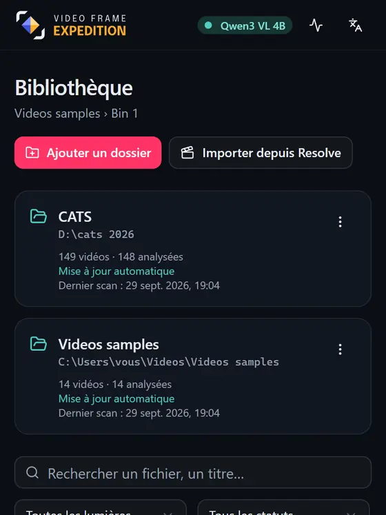
Page entièreWhole page
Partie 11Part 11
Ce qui reste chez vous, et le peu qui sort What stays, and the little that leaves
Vos images ne partent pas Your images do not leave
Les images, les sons et les textes sont analysés par des modèles qui tournent sur votre machine. Aucun service en ligne ne les voit — ni pour la vision, ni pour la parole, ni pour les questions. Images, sounds and text are analysed by models running on your own machine. No online service ever sees them — not for vision, not for speech, not for questions.
Deux appels, désactivables Two lookups, both optional
Une position arrondie — environ 70 mètres — et une date : à Nominatim pour le nom du lieu, à Open-Meteo pour la météo. C'est tout, et les deux se coupent dans la page Système ; un gazetteer hors ligne (GeoNames) prend alors le relais. Le même interrupteur masque la carte de l'onglet Contexte, dont les tuiles viennent d'OpenStreetMap. Cette page d'aide, elle, charge ses polices depuis Google Fonts et ses vidéos depuis youtube-nocookie.com. A rounded position — about 70 metres — and a date: to Nominatim for the place name, to Open-Meteo for the weather. That is all, and both can be switched off on the System page; an offline gazetteer (GeoNames) then takes over. The same switch hides the map of the Context tab, whose tiles come from OpenStreetMap. This help page loads its fonts from Google Fonts and its videos from youtube-nocookie.com.
Vos rushs restent intacts Your rushes stay untouched
L'application ne réencode rien et ne déplace rien. La seule chose qu'elle peut écrire dans vos dossiers est un petit fichier d'analyse par vidéo et par langue — et cela se désactive. The application re-encodes nothing and moves nothing. The only thing it may write into your folders is a small analysis file per video and per language — and that can be turned off.
Une mise en garde, parce qu'elle compte.
Les fichiers <nom>_FR.txt et
<nom>_EN.txt posés à côté de vos vidéos contiennent la
position GPS et ce qui est dit. Ils servent à
retrouver une analyse sans la refaire — base perdue, autre ordinateur. Mais partager
le dossier les partage aussi. Un fichier que l'application n'a pas écrit, ou que
vous avez modifié, n'est jamais remplacé.
One warning, because it matters.
The <name>_FR.txt and <name>_EN.txt files
dropped next to your videos contain the GPS position and
what is said. They exist so an analysis can be recovered without
redoing it — lost database, another computer. But sharing the folder shares them
too. A file the application did not write, or that you have edited, is never
overwritten.
Enfin, les positions des personnes et des animaux sont des cadres : personne n'est identifié, aucune empreinte de visage n'est calculée ni conservée. Finally, the positions of people and animals are boxes: nobody is identified, no face signature is computed or kept.
Partie 12Part 12
Quand quelque chose ne va pas When something goes wrong
L'analyse s'arrête, ou se marque « partielle ». The analysis stops, or comes back "partial".
C'est presque toujours un modèle absent ou LM Studio qui ne répond pas. Ouvrez la page Système : elle dit ligne par ligne ce qui manque. Une analyse partielle se relance depuis la page Tâches, et ne refait que ce qui avait échoué. Quand c'était LM Studio, rien à relancer : ce qu'il manquait se complète tout seul dès qu'un modèle de vision répond. Le panneau « Étapes d'analyse » d'une vidéo dit précisément quelle étape a manqué. It is almost always a missing model, or LM Studio not answering. Open the System page: it says line by line what is missing. A partial analysis restarts from the Jobs page, and redoes only what failed. When it was LM Studio, there is nothing to restart: what was missing is completed on its own as soon as a vision model answers. A video's "Analysis stages" panel says exactly which stage fell over.
Le bandeau dit « pas de modèle de vision ». The banner says "no vision model".
LM Studio doit tourner, son serveur local être activé, et un modèle
de vision être chargé — par exemple qwen/qwen3-vl-4b ou
qwen/qwen3-vl-8b. Pendant les analyses, l'application ne charge
jamais de modèle elle-même : c'est vous qui décidez ce qui occupe la carte.
LM Studio must be running, its local server on, and a
vision model loaded — for instance qwen/qwen3-vl-4b or
qwen/qwen3-vl-8b. During the analyses, the application never loads
a model itself: what occupies the card is your call.
Quel modèle de vision choisir ? Which vision model should I choose?
Celui qui tient sur votre carte en laissant de la place au reste, et qui décrit bien vos images. La page Banc d'essai le mesure : cochez les modèles de LM Studio à comparer, lancez le test, puis lisez la mémoire occupée, le temps par image et le respect de la langue, et notez les descriptions à l'aveugle. Un modèle plus gros n'est pas toujours plus juste : il est toujours plus lent, et prend la mémoire dont DaVinci Resolve a besoin. The one that fits on your card while leaving room for the rest, and that describes your frames well. The Model bench page measures it: tick the LM Studio models to compare, start the test, then read the memory taken, the time per frame and whether the language is kept, and rate the descriptions blind. A larger model is not always more accurate: it is always slower, and takes the memory DaVinci Resolve needs.
Pourquoi certaines vidéos n'ont ni lieu ni météo ? Why do some videos have no place or weather?
Parce que le fichier ne porte pas de coordonnées GPS, ou que sa date n'est pas fiable. L'onglet Contexte le dit : « date de tournage inconnue », « incertaine — seule la date d'export est connue ». Un fichier réencodé par un logiciel perd souvent ses dates d'origine, et un export ne transporte pas toujours le GPS. Because the file carries no GPS coordinates, or its date is not trustworthy. The Context tab says so: "shooting date unknown", "uncertain — only the export date is known". A file re-encoded by some software often loses its original dates, and an export does not always carry the GPS.
La recherche ne trouve rien par le sens. Search finds nothing by meaning.
Le modèle de recherche par le sens se télécharge à part :
vfe models search. Sans lui, la recherche par les mots fonctionne
seule. Après l'avoir installé, relancez l'étape « Index de recherche » sur les
vidéos concernées.
The meaning-search model is downloaded separately:
vfe models search. Without it, word search works on its own. Once
installed, replay the "Search index" stage on the videos concerned.
« Sons entendus » est vide alors qu'on entend des choses. "Sounds heard" is empty though I can hear things.
La reconnaissance ne nomme que ce qu'elle reconnaît avec assez de certitude, et seulement en dehors de la parole et de la musique — qui ont leurs propres lignes. Sur un son très faible, l'application l'écrit elle-même : « niveau très faible, reconnaissance peu fiable ». C'est volontaire : mieux vaut une case vide qu'un mot inventé. Recognition only names what it recognises with enough confidence, and only beyond speech and music, which have lines of their own. On a very quiet track the application says so itself: "very low level, recognition unreliable". That is deliberate: an empty box beats an invented word.
Puis-je utiliser l'application depuis mon portable ? Can I use the application from my laptop?
Oui, par Tailscale. La page Connexions donne l'adresse et le jeton. L'analyse continue de tourner sur la machine où sont les vidéos et le GPU ; le portable n'affiche que l'interface. Yes, over Tailscale. The Connections page gives the address and the token. The analysis still runs on the machine that holds the videos and the GPU; the laptop only shows the interface.
Faut-il tout refaire après une mise à jour ? Do I have to redo everything after an update?
Non. Une analyse faite est gardée : relancer ne fait que ce qui manque. « Mettre à jour » et « Tout refaire » sont deux choix explicites, jamais le comportement par défaut. No. An analysis once done is kept: running it again only does what is missing. "Update" and "Redo everything" are two explicit choices, never the default.
Les descriptions sont dans la mauvaise langue. The descriptions are in the wrong language.
Les modèles écrivent dans une seule langue, choisie dans la page Système ;
l'étape « Traduction » produit ensuite l'autre version sans rien réanalyser.
L'interface, elle, montre et exporte toujours dans sa langue — et le
nom des fichiers exportés finit par _FR ou _EN.
The models write in one language, chosen on the System page; the "Translation"
stage then produces the other version without re-analysing anything. The
interface always shows and exports in its own language — and exported
file names end in _FR or _EN.
L'analyse est lente. Que puis-je couper ? The analysis is slow. What can I switch off?
Les étapes les plus coûteuses sont celles du modèle de vision : la description des images, la position des sujets, le récit des plans et la synthèse. Décochez-les dans « Étapes à exécuter » pour un premier passage rapide, puis relancez-les plus tard sur les vidéos que vous gardez : rien n'est perdu. The costliest stages are the vision model's: frame descriptions, subject positions, shot stories and synthesis. Switch them off under "Stages to run" for a quick first pass, then run them later on the videos you keep: nothing is lost.
MentionsNotices
Ce sur quoi l'application s'appuie What the application stands on
Video Frame Expedition for DaVinci Resolve est gratuit, au code source ouvert, sous
la licence Apache 2.0 (fichiers LICENSE, texte officiel en
anglais, et NOTICE dans le dossier de l'application).
Video Frame Expedition for DaVinci Resolve is free and open source, under the Apache
License 2.0 (files LICENSE and NOTICE in the
application's folder).
Les modèles sont téléchargés à l'installation, jamais embarqués : Whisper (MIT), YAMNet et CED-small (Apache-2.0), PP-OCRv6 (Apache-2.0), D-FINE-S (Apache-2.0), YuNet (MIT), EmbeddingGemma-300m (Gemma Terms of Use). Les données de lieux viennent de GeoNames (CC BY 4.0) et de timezonefinder ; la météo d'Open-Meteo (CC BY 4.0, « Generated using Copernicus Climate Change Service information ») ; les lieux et les tuiles d'OpenStreetMap (© les contributeurs d'OpenStreetMap, ODbL 1.0). Models are downloaded at installation, never bundled: Whisper (MIT), YAMNet and CED-small (Apache-2.0), PP-OCRv6 (Apache-2.0), D-FINE-S (Apache-2.0), YuNet (MIT), EmbeddingGemma-300m (Gemma Terms of Use). Place data comes from GeoNames (CC BY 4.0) and timezonefinder; weather from Open-Meteo (CC BY 4.0, "Generated using Copernicus Climate Change Service information"); places and map tiles from OpenStreetMap (© OpenStreetMap contributors, ODbL 1.0).
FFmpeg et ExifTool sont installés à part, jamais redistribués. Le logotype est composé en Epilogue (Etienne Aubert Bonn, Tunera Type Foundry), sous SIL OFL 1.1, converti en courbes. FFmpeg and ExifTool are installed separately, never redistributed. The logotype is set in Epilogue (Etienne Aubert Bonn, Tunera Type Foundry), under SIL OFL 1.1, converted to outlines.
« DaVinci Resolve » et « Blackmagic Design » sont des marques de Blackmagic Design Pty Ltd, « Claude » une marque d'Anthropic. Video Frame Expedition est une application indépendante : elle n'est ni éditée, ni approuvée, ni soutenue par Blackmagic Design ou par Anthropic. "DaVinci Resolve" and "Blackmagic Design" are trademarks of Blackmagic Design Pty Ltd, "Claude" a trademark of Anthropic. Video Frame Expedition is an independent application: it is not published, endorsed or supported by Blackmagic Design or by Anthropic.